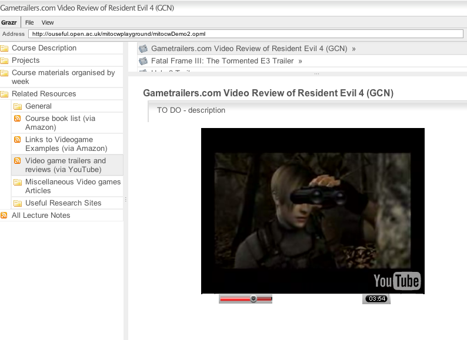
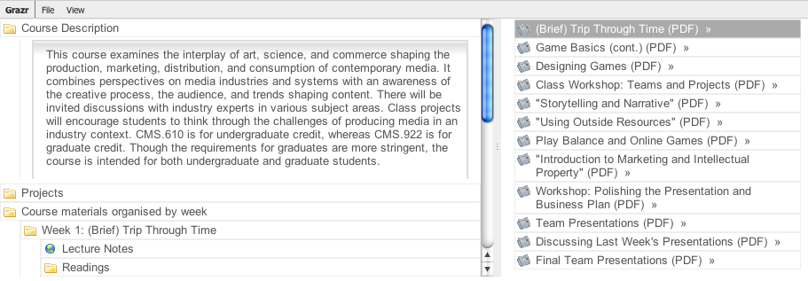
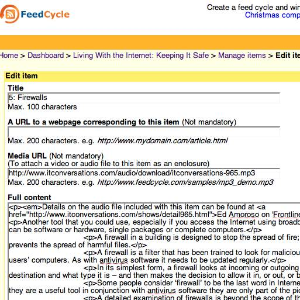
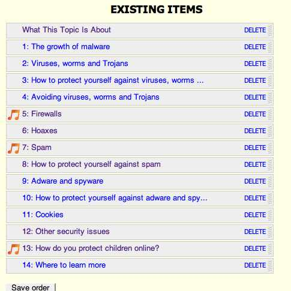
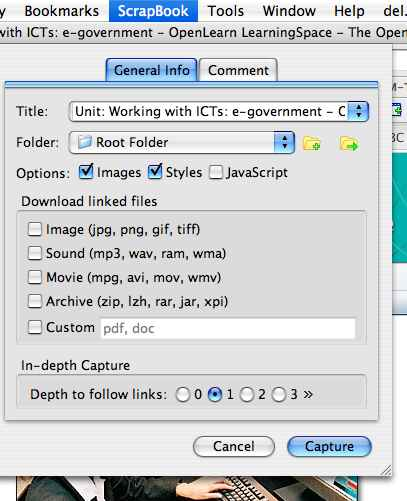
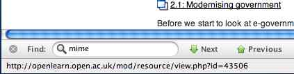
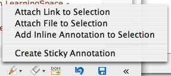
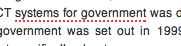
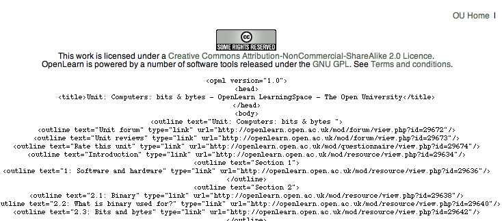

October 17, 2007
A Really Simple Question About <embed>
In Reusing Third Party Materials, Not...? I asked the question:
[J]ust how we might make use of online, third party materials ... because as far as I can tell, "open content" licenses don't really lubricate the process of reusing such materials within our own courses, behind closed paywalls at all...
I was at a meeting yesterday discussing this issue, and there's something about the rights clearance, permission soliciting and granting process that I just don't get*.
So here's one question that comes to mind - what's implied and commonly understood by an <embed> code?

Who do I have to be to be able to take that code and just use it without asking anyone? Yes - I know - in the above case, the YouTube Terms and Conditions will tell me... ;-)
Who's responsible for ensuring that the content can be embedded and who's liable for any impropriety if the material is used subject to the license conditions on the page from which the embed code was obtained?
If the end user always has to clear rights, down the chain, widespread re-use of content won't happen - it's far too complicated...
I guess what I'm after is a clearing house, where the end user accepts the license from the page the embed code is originally made available on, and trusts that all rights upstream have been cleared as long as license conditions on the page the embed code was obtained from are honoured downstream.
In particular, I'm thinking of a clearing house for academic use - like Jorum [UPDATE: maybe not - "Why I won't be using Jorum" - thanks AJ...] or Intute, I guess? (Intute is interesting - if I link to a 3rd party website, my rights department will want to check that I'm using the link appropriately under the Terms and Conditions of the site I'm linking to. If I pull that link in from Intute, will they still want to check? Or do we assume that because the link is pulled via Intute, all's okay?)
[UPDATE: Stephen Downes (correctly;-) points out how rubbish a central repository is, and remind me of his "OpenID for DRM" model. What I was struggling with was how to avoid the need for repeated rights confirmation by different end users in the same sector. I guess if a digital object has had rights clearance checked by one institution, and these clearance credentials are acceptable directly by other institutions, then the okay only has to be achieved once, and then on the way out (so only resources that someone wants to use get cleared...]
Why should education get this favoured treatment, anyway, of commercially hoarding other people's work and saving ourselves the cost and trouble of producing it ourselves? Because I believe that the learner should have to put some effort in too, to get value from the material that is being used in the learning context.
I don't really hold with students as customers, buying enlightenment. If they are customers, then yes, educational institutions should pay for every scrap of 3rd party material we draw on. But if they are students, and they need to put their own effort in for the learning payoff, then our use of the 3rd party content is one of the ways we're helping them create their personal skills and knowledge structures. And we're helping the students unlock value from the 3rd party materials for themselves by putting those materials in some sort of context... We're not taking 3rd party ingredients, baking a cake, and handing it to our customers (if we were, we should pay for those ingredients); we're looking for sample ingredients that we can help our students learn to make their own cakes with... Maybe... I'm a bit out of my depth on this one!
* I do now, I think... Note to self - our rights department check that we are using 3rd party materials under the Terms and Conditions they are made available by. As course authors, we are not responsible. Wherever we get material from, Rights will want to check the usage rights. Maybe one day, rights clearance can be automated by making use of something like license information specified in XMP. Using CC material does not simplify the rights process - the rights will still need checking by someone else with the authority to sign off on them....
PS for anyone commenting on OpenLearn units or uploading content to OpenLearn LabSpace, be sure to take note of the Terms and Conditions, which state:
6.6 You may not through any submitted content create a hypertext link to a third party's website (home page, web page or documents contained within) without the prior consent in writing of us and the third party in question.
Just as a matter of public record, I assume that written permission has been obtained for every link to every external website that is mentioned in all the course materials on OpenLearn, as well as any links to third party content mentioned in unit comments?
Tags: openlearn, creativecommons, licensing
October 04, 2007
UC Berkeley Lectures on Youtube, via Grazr
TechCrunch reported today that UC Berkeley have been putting a wide selection of their lectures up on YouTube: UC Berkeley Puts Courses On YouTube, though AJ isn't much impressed...
I was intrigued as to whether it's possible to search videos by user on YouTube and get the result via a feed using the YouTube/GData API, and it's easy... For example: http://gdata.youtube.com/feeds/videos?q=skeletal+biology&author=ucberkeley.
Using a simple bit of GrazrScript, it doesn't take much to build a little search widget around this feed, that you could then embed in your own page.
To make things a little more interesting, though, I also added a feed embellishment via a Yahoo Pipe that adds the movie as an enclosure to the feed so that it can be played directly within the Grazr widget (scroll down on the result in the widget... the embedded player may look a little broken at first, but it works fine if you click on it).
So here it is: UCB Video search via Grazr

I maybe need to look around YouTube to see if there are any more universities putting their content up there.
If you know of any, feel free to add them in a comment.
PS add the UC Berkeley lecture search tool to Facebook with this UCB Video Lecture Search Facebook App
September 24, 2007
Reusing Third Party Materials, Not...?
Over the last year or so, there have been occasional mutterings about how we might go about producing 'contentless' courses - that is, courses light on OU sourced content that reuse third party materials, wherever possible.
Many courses in the past have drawn on third party material, of course, most typically by "wrapping" readings from a set text with a study guide. Our Cisco Certified Networking Course goes one further, by wrapping Cisco's own elearning materials with some of our own assessment material.
The role of the study guide is to pace progress through set books and support learning by means of additional self-assessment material and short reflective exercises, as well as providing extended notes on particular topics.
But as far as I know, there haven't been any courses produced to date that have sought to exploit a significant amount of 'open content licensed' materials and incorporate them in our own teaching materials.
In fact, just how we might make use of online, third party materials, I'm not sure, because as far as I can tell, "open content" licenses don't really lubricate the process of reusing such materials within our own courses, behind closed paywalls at all...
(If our students are customers, and we're adopting the language of commerce, then "paywall" is the correct term, I think?)
For example, I'd love to be able to embed a document a from Scribd, or a presentation from Slideshare, into a set of online materials, along with a YouTube movie and a maybe an ITConversation or two, but while grabbing the embed code is easy, getting the rights clearance is not...
What I would like to be able to do - what I would love to be able to do - is search for content licensed in such a way that I know I can embed it in my own online course materials without rights hassles, that I can archive a copy of the material in case it disappears from the orginal site, that I don't have to worry about embedding someone else's Flash player in our course materials...
I'd also like to think I could structure an online course in such a way that I could use resources like this game about the history of games without having to worry that the quality is not quite up to scratch or that most of the time students are being referred 'optionally' to third party sites because we can't get the third party material needed for a contentless course onto our own site...
But it feels late, tonight, I'm tired, and my imagination is lacking...
September 10, 2007
Issues With OpenLearn RSS Feeds - Obtaining User Statistics
[UPDATE: the 'issue' with OpenLearn unit content feeds has now been resolved - all the feeds should be working properly now :-)]
Last week, I posted on the newly announced OpenLearn RSS feeds, without testing them in anything other than in a web browser (after all, they're just feeds, right? ;-). However, trying the feeds out last night, I found that whilst they worked okay in the browser, they didn't work with a wide variety of online services.
In particular (and insofar as I tested them out), OpenLearn feed subscription works fine with Google Reader, Pageflakes, RSS2PDF, Damia and FeedRinse but the feeds are not discovered or recognised at all by Bloglines, Grazr, Netvibes, Yahoo Pipes, Google mashup editor or Feedburner (I didn't try Popfly).
So what's going on?
A quick test with Web Sniffer - an online tool for looking at http headers - reveals the problem: a hack to use a cookie and quiet guest login to the OpenLearn Moodle environment, presumably to provide a (naive?) way of trying to track the feed usage (a requirement of the OpenLearn research team).

Because the cookie'n'redirect hack is causing so much problem with such a wide variety of feed mashup tools, I'm hopeful that a fix will posted sooner rather than later (athough if you are a PHP hacker and know of a way of using curl or some other tool that will accommodate the handshake and will let me create a simple proxy/relay, please let me know!)
Anyway, the reason I'm guessing motivated the hack - obtaining feed user stats - got me thinking about how to collect such data, a problem that is not easy at the best of times (here's some discussion on Why Feed Tracking is Hard).
I use Feedburner for the OUseful.info feed, but they may not be the preferred option for many, particularly if you want to use a feed URL that is own your own domain*.
* There is a hack way around getting Feedburner stats for your own hosted feed URLs apparently, as demonstrated by this post on How to Get Feedburner Stats WITHOUT Using Feedburner On Your Blog, a trick that is picked up on in this FeedBurner Stats WordPress plugin, which gives you FeedBurner Stats without redirecting your users the FeedBurner feeds.
Keeping the stats collection in house, it's probably worth assuming that if there are large numbers of people subscribing to a feed, they will tend to be distributed over the more popular feed readers.
How-To: Measuring RSS Readership is a recent post reviewing the return of user subscriber numbers from the user agent of the main feed crawlers/readers.
This Feed Statistics Plugin for Wordpress (latest news) provides a clear (PHP) example of how to make use of these user-agent reports to provide estimated subscriber numbers for a particular feed.
How useful these numbers are is debatable, of course... becasue you don't know for sure how the number of "subscribers" relates to the number of people who actively read the feeds they have subscribed to!
September 07, 2007
OpenLearn RSS - Feed Your Mind
A couple of weeks ago, the OpenLearn team released a host of OpenLearn related RSS feeds as part of the latest release of the OpenLearn environment.
OpenLearn "Course Unit List By Topic" Feeds

This widget can be used as a navigation scheme for the OpenLearn units as this simple demo shows: Navigating OpenLearn Units using Grazr.
As well as topic level feeds (that is, feeds containing a list of units in each topic area), an All OpenLearn Units feed is also available.
For convenience, I have bundled the topic feeds into a single OPML feed available from here: OpenLearn Courses OPML
An OpenLearn search GrazrScript OPML feed is also available. (Until such a time as the OU search engine support OpenSearch RSS results, this uses a Dapper application to generate the results feed by screenscraping!)
For completeness, here's a literally combined OpenLearn Units and OpenLearn Search GrazrScript OPML feed. This is the one that is used in the above demo.
OpenLearn Unit Content Feeds
Far more exciting, to my mind at least, is the release of RSS versions of each of the OpenLearn course units (this is still rolling out).
Here's an example: a course unit on Babylonian mathematics (via RSS).
You can find the full list here: OpenLearn Units and thier RSS unit content feeds.
The feeds are also reachable from each course unit landing page (example):

Unfortunately, the feeds I tested don't appear to working in Grazr at the moment, so I can't embed a demo. [UPDATE: all the OpenLearn unit content feeds now seem to be working properly :-)]
BUT - by making these feeds available, the potential for "feedlearning with OpenLearn" is significant.
There are still one or two issues around relating to the addressing of course units and feeds - at the moment you can't obtain (or even generate) a list of course content feed URLs from the unit listing feeds, but hopefully that will be addressed by the next push of the unit listing feeds (maybe by adding a numeric location/reference code element in the metadata?). [UPDATE: solved; for example, here's an OPML file that points to unit content feeds for the Science and Nature units: Science and Nature Unit Content Feeds (OPML Reading List). HOWEVER, the OpenLearn unit content RSS is not liked - at the moment - either by Grazr or Optimal browser... it seems to work okay in a browser though?; I haven't tried it yet in an online feed reader...]
OpenLearn XML Feeds
Finally, its worth mentioning that the XML 'source' files for OpenLearn Units are now available via a URL. That is, there is no longer a requirement to download the XML in a zipped file bundle.
With mashup services such as IBM's DAMIA accepting XML input, it will be interesting to see whether improving the availability of the raw XML in this way encourages people to play with it...
September 06, 2007
OpenLearn RSS So Nearly There...
I was just about to write a post talking up the release of RSS listings of OpenLearn courses, as well as the far, far more exciting news that RSS versions of the OpenLearn units themselves are being made available (e.g. see this list of OpenLearn Units as RSS), but you know what...? I'm not going to...
The value-add I had in mind for the post was intended to be a quick 10 minute script that took an RSS feed of course units, used a simple string rewrite of the URLs to convert them to URLs that pointed to the RSS feeds, and then bundled them up in an OPML file for viewing in Grazr.
But you know what?
Whilst the RSS listings of course units point - quite sensibly - to the "tidy" URL for each course (something like http://openlearn.open.ac.uk/course/view.php?name=A103_1 for example), the unit content RSS feeds themselves (and the actual links to the course units on the HTML version of the page) use a nasty URL, such as http://openlearn.open.ac.uk/course/view.php?id=1472 for a course unit, and http://openlearn.open.ac.uk/file.php/1472/formats/A103_1_rss.xml for a feed.
The number in the URL - 1472 in the above case - is of course unique to each unit, though it is consistent across HTML and RSS locations of the same unit.
And it doesn't appear anywhere in the "All OpenLearn Units", or OpenLearn Units by topic, RSS feeds.
So I can't use the RSS feed(s) of course units to produce an OPML feed that points to the RSS versions of the units...
That is, I can't even create the URL for the RSS version of a unit from the unit's description in the course listing feed...
So close, folks, yet so far away...
[UPDATE: there is- apparently - a sensible URL for the RSS feeds that works; for example http://openlearn.open.ac.uk/file.php/A103_1/formats/A103_1_rss.xml
Which means ... I can get a feed of content feeds. For example, here are the Science and Nature units via an OPML feed. Note that at the moment, they don;lt seem to work in either Grazr or Optimal browser...]
August 15, 2007
"Feeding from Open Courseware" - OpenLearn Conference Abstract
Earlier today, I had to combine a couple of abstracts I'd put in to the OpenLearn Conference for the single speaking slot I've been allocated. Although I normally keep everything, I couldn't track down either of the abstracts for quite some time, so I mailed the organisers to see if they could let me have copies back (unfortunately, the abstracts weren't on the conference website - I checked; and come to that, the same is true for the abstract of the presentation I'm giving at Internet Librarian International 2007, which I also appear to have, err, misplaced...!)
Anyway, assuming that I'm likely to have trouble tracking the new abstract down when I come to prepare my presentation in the hours, err, days (okay, Patrick? ;-) before the OpenLearn conference (30-31 October 2007), here it is... just in case...
Feeding from Open Courseware - Exploring the Potential of Open Educational Content Delivery Using RSS Feeds.
Tony Hirst
Faculty of Technology, The Open University
Abstract An implicit aim of many opencourseware projects, including OpenLearn, is to encourage the informal use of open educational resources, as well as its reuse. In this presentation, I shall describe several examples of how open courseware can be disaggregated into component parts that can be easily shared and republished using RSS and OPML web feeds.From 'daily learning chunks' delivered to candidate PLEs such as PageFlakes using a Web 2.0 mashup to mobile access, this approach can also be used to turn bibliographies into online bookstores and provide a way of displaying media assets in a rich media slideshow.
The original wave of opencourseware initiatives, such as MIT's OpenCourseware project, sought to make high quality educational resources available for reuse and repurposing by whosoever wanted to avail themselves of that content. More recent thinking implies that just providing the content is not enough. Approaches such as OpenLearn provide a learning environment around the content that can provide personal learning support tools and support the formation of learning communities and.
Although providing 'reuse and remix' opportunities forms part of the war cry for the OER community, few demonstrations of just how the content may be used in such a way are offered. In the same way that the learning object economy that was much heralded by educational technologists never seemed to be as successful as was originally hoped, is it possible that the hoped for reuse and remix of OERs will similarly fail to take off (Lamb, 2007)?
The granularity at which open courseware content is typically published - the course, or course unit - makes it difficult to consume bite size chunks of content easily, and arguably makes it difficult to discover reusable or remixable items of content.
As I have written elsewhere, '[t]he easiest remix is not really a remix at all, and barely counts as a reuse, though it is a republish or represent - just take a direct copy of someone else's content and make it your own property/publish it on your own site, in your own content area' (Hirst, 2007).
At the simplest level, exposing open educational content via an RSS feed immediately opens up this republishing opportunity.
Taking a lead from social websites such as youTube and flickr, where content can be shared at a fine level of granularity (the movie or picture level) as well as at an aggregated level (a playlist or photostream), I shall describe several implemented examples of how both MIT Open CourseWare courses, and Open University OpenLearn units, can be disaggregated into component parts and then republished in a syndicated way using OPML and RSS feeds, as well as through social networks.
One advantage of making content available via RSS is the wide variety of pre-existing tools that are capable of consuming RSS feeds. For example, it is possible to consume RSS feeds RSS readers (e.g. Bloglines or Google Reader) or webtops (e.g. Netvibes, iGoogle or PageFlakes), as well as republishing content in RSS format as PDF documents, or even audio files. Mobile support for RSS feeds is also widespread.
However, the use of RSS feeds as a significant route for publishing OER content does not seem to be widely recognised. For example, the Open Educational Practices and Resources. OLCOS Roadmap 2012 (Geser, 2007) uses its section entitled 'RSS feeds enrich educational portals and learners can subscribe directly to thematic content feeds' to refer more to the way learners can aggregate content around a particular topic from formal and informal publishers, such as news services and bloggers, without suggesting that OER providers themselves might publish educational content in this way. This in part reflects the mindset that RSS is used to publish changeable content or content that is regularly updated, as opposed to providing a way to syndicate fixed or static content, such as unchanging course material.
In this presentation, I will describe the process by which early demonstration RSS feeds for OpenLearn content were generated from the original OpenLearn XML content and MIT OCW web pages using various third party online tools. Essentially, this is just republishing the materials in the RSS medium, in addition to the HTML pages or printable PDF documents that are typically made available.
This "RSSified" content can be used as the basis for republishing and remixing the content by third party users, or consuming it in the location of their choice. For example, RSS versions of course units can be viewed using candidate personal learning environment "webtops" such as Netvibes and PageFlakes, or distributed as "daily learning chunks" using OpenLearn_daily, a Web 2.0 mashup involving OpenLearn and Yahoo Pipes; and simple content remixes can be derived using RSS feed filters and simple content analysis tools.
Reusing or repurposing material at the level of granularity with which it is published (that is, at the course or unit level) is problematic on several counts: the physical format of the materials may not be appropriate, the way multiple topics covered by the materials are bundled together may not deliver the correct storyline for the person wishing to reuse (elements of) the course, the materials may not have the correct blend of media assets for the intended reuse, and so on.
By disaggregating content and individual assets and republishing them as separate items in a single RSS feed, the component parts of a course can be made available as a cleanly packaged bundle of separate items without the need for heavyweight packaging formats.
As a demonstration, I will show how an MIT OCW course can be atomised in such a way that bibliographic information and media assets related to course examples can be republished via shareable, rich media feeds, and how the course as a whole can be disaggregated into component parts that can then be republished in aggregated form using an OPML feed.
I will also describe an automated process for treating an OpenLearn course unit in XML form as a database that can be "mined" - or "asset stripped" - in several different ways to expose particular components of the course, such as link collections or image collections. The link collections can then be used to seed custom search engines, and media assets can be passed into course related photostreams or online radio channels.
References
Geser, G. (ed.) (2007) "Open Educational Practices and Resources. OLCOS Roadmap 2012" ISBN 3-902448-08-3 Available from: http://www.olcos.org/cms/upload/docs/olcos_roadmap.pdf, accessed 14/7/07.
Hirst, T. (2007) "So What Exactly Is an OpenLearn Content Remix?" OUseful Info, April 3, 2007, ./010112.html, accessed 14/7/07.
Lamb, B. (2007) "Dr. Mashup; or, Why Educators Should Learn to Stop Worrying and Love the Remix" EDUCAUSE Review, vol. 42, no. 4 (July/August 2007): 12-25. Available from: http://www.educause.edu/er/erm07/erm0740.asp, accessed 14/7/07.
PS Not having any 'proper' references to hand (as requested by several referees of the original abstracts who didn't hint at what those references might be, or even where they might come from), I put out a shout to a couple of people who work in the area to see if they had any good ones to hand. Apparently not... Now I used to be a real academic reference junky (honestly!) back in my PhD days, although even then I'd be as likely to cite a pre-print or technical report I'd found on an individual's web page as something from a heavyweight (= slow turnaround) journal. But now? I am soooooooooo out of the formal literature and don't even know what conferences or workshop series to follow, let alone what journals to read ... So if you do know offhand of any good references that might bolster the above, can you, err, please mail me link or DOI? Or share me the link via delicious? Ta muchly... (I'll give you an acknowledgment, of course :-)
PPS don't forget the OpenLern Remix competition... there's still plenty of time to enter...
July 14, 2007
OpenLearn Feed Annotation Streams
One of the things a few of us have been looking at informally over the last few months are ways of assembling relevant educational content around Open2.net broadcast related content - think "Sleevenotez for education", or something similar.
To be scaleable, we need an automated solution for achieving this, so I had a little tinker with a Yahoo Pipe that will take an RSS feed, pass it through the Yahoo Content Analysis package and use the resulting terms as search terms over OpenLearn content:

You can try out the service with any RSS feed here: OpenLearn feed annotator.

The Pipe is a little slow at times - and is in desperate need of optimisation (e.g. to prevent multiple OpenLearn queries using the same content analysis generated search terms).
The quality of the annotation service is dependent on at least two things - the effectiveness of the content analysis service, and the effectiveness of the OpenLearn search (which itself is dependent on the size of the OpenLearn corpus that has been indexed and the extent to which the OU search engine has been optimised over that content).
Anyway - it's a starting point, and while many of the annotations are a little, shall we say, a little quirky at the moment, it's something to help get across the idea of feed annotation streams.
June 23, 2007
Wikipeadia + OpenLearn?
I spent huge chunks of today tinkering on and off with different combinations of Wikipedia and OpenLearn content in wikimindmap style but none of it was very satisfactory. Here are a few things I noticed/tried along the way (nothing more substantial to report...):
- wikimindmap uses a modifed version of the map widget, that handles special "wikilinks" that launch a new wikimindmap centred on a new topic;
- Wikipedia has an API and a query interface (via searchenginejournal.com) that will return results via a JSON feed;
- it's easy to add the Yahoo content analyser to a Yahoo pipe that feeds off an OpenLearn RSS feed (and then optionally use the returned terms as the basis of a Yahoo search over Openlearn or Wikipedia, for example) but non-RSS appended links don't seem to make it to the Yahoo Pipes output RSS feed - though they do appear in the JSON feed;
- this json2xml Javascript routine can be combined with a Pipes AJAX feed to generate XML text containing everything the Yahoo pipe has generated, RSS compliant or not.
It's easy enough to handcraft a map that combines OpenLearn Unit links with Wikipedia maps - but why is this interesting/useful? If I manage to produce a demo that feels even half-way right, I'll post it.
For now, here's a glimpse:

This shows a combination of an OpenLearn Unit map and a Wikipedia/wikimindmap node (the exploded "computer virus" node). The green recycle symbols are a feature of the modified map viewer. Clicking on the symbol loads a new wikimindmap centred on the corresponding node.
Re-Presentation and Re-Interpretation of OpenLearn XML Materials
Thinking back over many of my Openlearn doodles, it would be hard to see many of the experiments as remix or reuse examples using any common understanding of those terms.
According to the OpenLearn Competition page, reuse and remix are defined as follows:
Define: reuse
Use our content as it is to impact learners. This could be through using it in your own teaching or by delivering our content in a new medium which engages more learners.
Top marks will go for evidence of impact. You might use OpenLearn materials to reach a large number of users - perhaps through a social network you are part of or your own version of Moodle - or you might impact just one person but in a really critical way for their learning.Define: remix
Amend our materials to create something new. This could mean taking old archived materials and updating them by adding your own knowledge. It might mean localising our content for an audience with different cultural and language needs. Maybe you'll use our knowledge mapping software to demonstrate a new perspective on the materials. For example see the knowledge maps relating to our study units that add new resources and perspectives on the original material.
I've commented on my confusion about these terms before (So What Exactly Is An OpenLearn Content Remix?) but here are a few more thoughts on the topic...
In most of the tinkering I've done with OpenLearn materials, I've not really been interested in how teachers or learners might use what I've produced to deliver learning experiences OR in the content that is delivered.
What does interest me are the ways I can re-present or re-interpret the materials. OpenLearn XML takes the place of LEGO bricks, and at the moment I'm just playing with it...
So here then are some preliminary thoughts on what re-presentation and re-interpretation might be to draw out this distinction:
- Re-presentation: finding alternative ways to present and publish OpenLearn Content units, using OpenLearn XML (ideally) as the source material. Examples here include delivering content via RSS feeds, or via a wiki. Experiments with navigational forms also fit here, maybe? For example, providing hierarchical navigation sidebars (and sensible addressing) or dynamic (mind) maps.
- Re-interpretation: by reinterpretation, I mean seeing the OpenLearn XML as something other than a 'traditional' course unit, such as using the course unit as a database that can be mined in various ways. For example, the "outlinks" from the unit can be used to define a custom search engine, book references can be used to seed an OpenLearn Unit online bookshop and media assets can be stripped to provide a topic specific multimedia channel. Re-presented content can also be used as the basis of re-interpretation. For example, OpenLearn_daily (as well as more general personally scheduled web feeds) reinterpret the way in which content is delivered, in this case as daily chunks.
In short, I guess re-presentation and re-interpretation - which is where my interests lay - represent a re-imagining of what OpenLearn XML might be transformed into in a technical sense...
...whereas remix and reuse are focussed more on the end-user and on how the "contentful" aspect of the materials can be used to deliver actual teaching and learning in association with other resources.
Mapping OpenLearn XML, Pass 2
Okay, so here's a second pass at mapping the links contained in an OpenLearn Unit, partly in response to Stephen's general criticism (which I totally agree with) about the misuse of mindmaps for simply "listing" things without any structure.
This time links are organised according to the section they are contained in: Structured T180 links

Unfortunately, the links are now rather hard to find (not each section contains external links).
I'm also a bit concerned about how quickly the map is starting to grow, even for quite a small unit.
Next pass is to add in a bit of text, maybe, or some of the media assets (if that's possible), just to see where all this exploration leads! ;-)
But now it's late and I need to go to bed...
June 22, 2007
OpenLearn Unit Link Map
My feedreader seemed to be full this morning with posts about wikimindmap, which produces a mindmap view of Wikipedia content.

At first I thought this was doing something really clever, but a tiny bit of digging suggests they're just link scraping (and exploiting a bit of structure - like "See also" information) and then using a (really neat) third party tool - the Flash Browser for FreeMind mind maps - to display the results:

One thing I will take away from the WikiMindMap, though, is the way it provides a really "gentle" navigational display for the links contained on a page (and one I may reuse in a searchfeedr context).
After a quick "View Source", I just had to knock up a demo link viewer for the links in an OpenLearn Unit, slightly modifying the OpenLearn XML Unit link scraper that I built some time ago.
Anyway - here's a demo of the links contained in T180_8: OpenLearn Unit link mapper demo:

Some basic link scraping XSL generates a crude FreeMind XML file which is then passed to the flash FreeMind viewer.
If I get a chance over the weekend, I'll generalise the viewer and add it to the Towards an OpenLearn XML (Re)Publishing System, providing a map view to arbitrary OpenLearn Units (or at least the ones for which I have URL powered access to the XML...).
I also need to have a think about putting a bit of structure into the links view (maybe extracting links by section [UPDATE: demoed here - Mapping OpenLearn XML, Pass 2], and maybe even trying to use something like the Yahoo content analyser to add a few relevant tags) and exploring how I might add media assets scraped from OpenLearn Units into the map view.
June 20, 2007
OpenLearn Content via a Wiki
When OpenLearn first launched, one of the things I fully expected the playful folk out there to do was to migrate the content into a wiki - just because they could.... As far as I can tell, this hasn't happened yet...
We're now several months in to the first phase of the OpenLearn project, and content migration of OU course units into the OpenLearn environment is carrying on apace. However, my reading of the (lack of) activity in LabSpace, where the project team were hoping to see reversioned content uploads, is that: a) no-one is really sure what the license allows, and what sorts of things you could possibly do that constitute a remix; b) the process of getting content out of LabSpace, doing stuff to it, and then getting content back in to LabSpace is just too hard...
The OpenLearn team, too, are maybe having second thoughts about how they see the LabSpace working for content remix: Long live LabSpace or RIP?.
So as I wait for the 'official' release of OpenLearn course content RSS feeds (due over the summer, I believe), I thought I'd take a break from my own RSS OpenLearn tinkerings and have a play with wikifying OpenLearn content, just to see how it feels...
So last night I spent and hour or so cutting and pasting content from an OpenLearn unit - Exploring distance time graphs (MU120_3) - into a wiki: MU120_3 Wiki... just to see: a) how it felt; and b) what immediate issues came to mind.
So here's the quickest of quick summary of points that first came to my mind:
- How should I style the content? As simply as possible...
- How should I map content from the course to the wiki? Course page to wiki page.
- How should I name pages on the wiki? Sensibly, to give some chance of URL hacking working... I opted for OpenLearn unit page number to course page number. E.g. from a root "http://openlearn.pbwiki.com/MU120_3" the n'th page would be "http://openlearn.pbwiki.com/MU120_3_n".
- How should navigation between pages be handled? I opted for simplicity - previous/next links and a link back to the course contents page.
- How should activities, images etc. be handled? As simply as possibly, with easy to achieve style changes (boxes, bold font) where it was important to identify a particular sort of content (figure caption or description, for example, or activity disussion).
Having cut'n'pasted a sample of material I asked the OpenLearn team how they felt about it. Deliberately, I didn't put attribution or licensing detail up, in contravention of the license. This was noticed, and a member of the team rectified the situation by adding a licensing link to the top of the first page.
Looking over the wiki structure - I opted for pbwiki - I noticed that within a pbwiki subdomain the editable sidebar appears on each wiki page. As such, this is an ideal place for a licensing/attribution statement. Once added, the attribution will now appear in the sidebar on each newly created wiki page. [Added: I also added a link in the sidebar back to the OpenLearn forum associated with the course, something I also tried to remember to do in the OpenLearn_daily feeds.]

One major issue that came to my mind was loss of tracking data if people consume the course material via the wiki rather than from the OpenLearn site. This can be mitigated by adding tracking to the wiki pages - so I added a Google analytics tracking code to the sidebar. If anyone uses the wiki, the usage becomes trackable (user edits to content will of course be tracked by the wiki itself).
As far as 'ease of use for remixing' goes, I know which I would prefer over making changes to the wiki or editing OpenLearn XML and resubmitting it...
Even as I was cutting and pasting content into the wiki, I made a couple of additions to the material: firstly to add a (relevant) link to an online graph paper generator (on this page) and secondly to add a (missing) description to an image.
Does this count as a remix, I wonder? If nothing else, it's a least a minor revision... One thing I do know for sure, I won't be submitting the changes - small as they are - back to the LabSpace via the OpenLearn XML (re)submission route.
And if I make major changes to the content, I won't be submitting it back to OpenLearn/LabSpace via that route either - the conversion into the XML format from the wikitext (or WYSIWYG) view would be just too time consuming...
So I guess the current - and any future - changes to this material are lost to OpenLearn?
Ho hum - if you want to tinker with the content, it's at http://openlearn.pbwiki.com/MU120_3; at the moment an easy to guess password is required to get in to edit it, though anyone can see the content.
Mail me if you want to play and can't guess the (case sensitive...) password...
June 01, 2007
OpenLearn Remix Competition
Reuse or remix units - and win a prize!We're setting a challenge to educators worldwide to reuse and remix OpenLearn study materials. The aim is to inspire creativity, collaboration and cost reduction in course production, enabling wider access to education for all. We've launched a competition with two categories - reuse and remix. The competition aims to showcase and reward some of the best examples of this. And it is open to OU staff too!
So what are we looking for? And what exactly is reuse and remix? Reuse is about using our content as it is to have an impact on learners. This could be through using it in your own teaching or by delivering our content in a new medium which engages more learners.
Top marks will go for evidence of impact. You might use OpenLearn materials to reach a large number of users - perhaps through a social network you are part of or your own version of Moodle - or you might impact just one person but in a really critical way for their learning.
Remixing is about amending our OpenLearn materials to create something new. This could mean taking old archived materials and updating them by adding your own knowledge. It might mean localising our content for an audience with different cultural and language needs. Maybe you'll use our knowledge mapping software to demonstrate a new perspective on the materials. We are already sharing learning materials in XML and Moodle format and will soon be adding plain zip, IMS Content Package, html (through the "print this unit" facility) and RSS, so there are many different ways you can take our content and rework it. You might prefer to take our video or audio content and rework that.
There are two prizes - one for the best example of reuse and one for the best example of remix. The entry will be judged by a panel of open content experts. The winners will each receive:
- Some technology of their choice up to the value of 250 that will help them experiment with new methods of teaching. It can be something worthy or something fun: an iPod, a smartphone or some useful software.
- Lots of attention at the OpenLearn conference 2007, where the winning entry will be showcased to experts in the field of open content.
- Recognition in an OpenLearn press release.
- Digital and printed stickers which can be used to announce their winning status to the world (better than an iPod any day).To enter, email us at openlearn@open.ac.uk with 100-200 words telling us about your entry and why you think it deserves to win an OpenLearn award. State which category you are entering. Include a url or attachment to show your work in action if applicable and give some indication of impact or potential impact.
Remember to include your contact details. The competition is open to all - including Open University staff and students - with the exception of the panel of judges. The deadline is 1st October 2007. The winners will be announced at the OpenLearn 2007 conference on October 30th.
http://www.open.ac.uk/openlearn
OU staff can find further information about the OpenLearn project here.
April 25, 2007
Disaggregating an MIT OpenCourseware Course into Separate RSS Feeds
Picking up on a couple of points raised in An MIT OpenCourseWare Course via an OPML Feed, I've atomised the MIT OpenCourse Course CMS.610 / CMS.922 Media Industries and Systems, Spring 2006 a little further and replaced some of the OPML items with RSS feeds.
In particular, I've replaced the list of video games with a feed containing those items pulled from an Amazon Listmania list via a third party Listmania2RSS service (which I've used before in a similar context: OpenLearn/OCW Reading Lists).
I've also created a youTube channel with trailers/reviews of some of the example video games mentioned in the course. Applying the bookmarklet mentioned in Grazring YouTube Favourites Playlists to the youTube channel page creates a static snapshot (i.e. not live:-( RSS feed of the playlist, which can also be mixed into the course OPML (or view the course via grazr):

Finally, I added another Listmania list, this time for the books cited in the course.
..and as an afterthought, a link to a delicious feed pointing to a list of bookmarks of the books on the reading list that appear in Google Books. [Latency on replicating bookmarks across the delicious servers is really becoming an issue, methinks?]
Whilst I haven't done this (yet!), it's trivial to pipe the Listmania lists into an online shop, courtesy of something like Amazon aStores.
This incremental disaggregation approach (?!) is a route I'm keen on exploring further as a way of identifying patterns that can be used in reverse as exemplar mashup strategies, by aggregating content from reusable raw components, rather than disaggregating it into reusable component parts.
The disaggregation step does, however, have the beneficial side effect of producing reusable components from effectively closed (i.e. not trivially mashable or remixable) open content ;-)
PS for another take on educational mashup activity, check out the Open, Connected, and Social: mashups wiki page.
April 22, 2007
An MIT OpenCourseWare Course via an OPML Feed
Over the weekend, I noticed that MIT OpenCourseWare courses were offering a "Download this Course" option. Intrigued, I immediately grabbed a copy of the CMS.610 / CMS.922 Media Industries and Systems, Spring 2006 course and had a poke around inside it.
The download bundle is - I guess(?!) - a standard (?) IMS - err - package? (can you tell I'm not up on educational material interoperability standards?!;-)
That is to say, the zip archive file opens into a set of nested directories with an imsmanifest.xml document. The archive file also contained copies of the HTML pages used on the course website as well as the PDF versions of the course lecture notes.
What I had been hoping for was a 'clean' XML version of the course webpages (i.e. a single source document from which they had been generated). Some hope!
Anyway, my initial enthusiasm curbed somewhat, I felt there was still some mileage to be made in RSSifiying the course, for three main reasons.
Firstly to see if what came out was "sensible" - i.e. whether a feed based version of the course could be sensibly viewed in a Grazr or Stringle environment, for example.
Secondly, to get a feeling for how to decompose a feed-delivered version of the course into separate component feeds.
Thirdly, to see whether those component feeds could be automatically generated from the IMS manifest, or scraped from the MIT OpenCourseware web pages.
The course - as published on the MIT OpenCourseWare website - is structured according to the course syllabus, readings, lecture notes, projects (i.e. group and individual activities) and related resources.

As a first pass, I have generated an OPML version of the course that follows a similar structure. At the moment, this OPML feed is - to all intents and purposes - a monolithic feed. Over the coming weeks I intend to disaggregate it into separate component feeds that can be reaggregated in an OPML feed that pulls in separate OPML and RSS component feeds.
You can view the OPML version of the course here: MIT OCW CMS610 Spring, 2006, Comparative Media (via Grazr).

Note that at the current time, some of the links (to New York Times) resources require a NYT login. I will patch these as and when I can. In addition, the links to audio-visual resources should really be made available via an embedded player, as well as link to the original site.
A cursory scan of the OpenCourseWare site suggests that the way individual web pages are composed across different courses is rather arbitrary, which will make scraping the site to automate feed production somewhat tricky.
I should be thankful for small mercies in the way OpenLearn content is bundled as XML I suppose!
PS this is spot on.
April 20, 2007
Innovating from the Inside, Outside
A couple of weeks ago, the OU hosted a workshop with several external consultants about OUr visionary future web strategy (presumably?) Martin Weller gave the heads-up, Stowe Boyd (one of the consultants) added a bit more detail - like suggesting this is an ongoing project - and Martin responded.
Needless to say, I can't find any documentation internally on this workshop/project (yet!) - though even if I could, it'd probably have to remain behind the firewall... (along with the new VCE Dashboard (internal readers can find a link on intranet home page, in one of the right hand navigation column panels...;-)).
[What follows is all a bit I and me, and me and I, for which I (!) apologise - but I (!?) don't really want to rewrite it all in a neutral voice just now...]
One thing that struck me about this workshop that the ideas are coming from the outside, in, which contrasts with something I've been meaning to post for some time now: inside, outside working...
There's no way I could have made any of the OUseful/OpenLearn toys (like OpenLearn_daily, or the OpenLearn_XMLProcessor, for example) until the OpenLearn project made the XML course unit files available under an open content/Creative Commons license.
For example, there was no way of getting XML versions of course materials that I could play with and publish on the public web.
That isn't to say that internally access wasn't available to XML structured content: for example, the OU short courses are generated from XML source documents (although these are not defined at the unit level - they use an XML document format defined at the page level - which I've argued against for the last 3 or 4 years...!).
It's just that being able to play with content that is still being delivered to students in live courses is just not done...
And of course, there are 'technical issues' too - materials locked behind an OU firewall require authentication before they can be viewed (even XML files). Which means that using third party tools to process them isn't really possible...
(The fact that many of the services I'm using didn't actually exist even a few months ago is neither here or there... it's also worth bearing in mind that quite a few of the third party services used in OUseful apps have benefitted (maybe?!) from feedback I've been able to provide as a result of using those apps for OUseful demos. In addition, OUseful tinkering has also generated more than a few feature requests and bug reports to third party services and maybe, maybe, contributed implicitly to knowledge transfer activity, albeit untracked.)
Another advantage of inside, outside working is that I've been able to bring to bear my knowledge of how OU courses are designed and put together to be able to atomise/disaggregate them in ways that hopefully make sense (e.g. by RSSifying the content).
I guess I can also justify the considerable amount of time I spend in OUseful displacement activity on OpenLearn related activites because I work for the OU (even though I am not part of the OpenLearn project). Again, an inside justifcation for this.
The power of working from the outside, of course, is that anyone could be doing this stuff - and I can't be stopped from doing it (in my own time, of course; hmmm....)
Partly for this reason, I try to ensure that OUseful doodle apps do not require any privileged access to Open University services (just like I try to ensure that news I post on this public blog can be found on the OU public website... okay, maybe I find the info on the intranet first, and then look for a public route in to it, but hey, at the end of the day it's the public who's paying for what we do...;-)
In many cases, an OU server is used to host stuff; but wherever possible, tools are written using client-side Javascript to implement functionality (and making "View Source" trivial), relayed RSS feeds/JSON used to ensure that clients don't suffer form proxy/security problems arising from trying to access feeds from OU domains, and so on.
So: one of the biggest payoffs for me about OpenLearn is that it allows me to indulge in inside, outside working.
For example, there's no problem using third party tools, services and applications in the services I want to develop.
It also means that skunkworks and side projects can be entertained without having to worry about leaking copyrighted/rights protected materials, for example - or having to obtain permission to try out various novel delivery models using either the materials or external, third party tools.
And because the materials are there, and freely available, anyone can use them...
...which includes - and this may come as a surprise to many - people on the inside...
So the general lesson here is that if an organisation opens up its content or services, for example, then its employees can innovate with those resources without the need for official sanction...
...if, that is, they have 20% time (or study leave, in the OU case), or they are prepared to burn a bit of midnight oil.
So for me, then, the opening up of content (and services) also opens up inside, outside working opportunities, enabling individuals who want to try out work-related innovation that the institution won't necessarily allocate resource to, to pursue that internal innovation outside the confines of work (in all the forms those confines take).
NB note that none of this applies if you have a life, do the work you are supposed to do, don't need to be a hero etc! ;-)
April 19, 2007
OpenLearn Unit Search Hub
Picking up on the previous post, I knocked up a Yahoo Pipe that will use an OpenLearn course unit as an outlinks search hub, demonstrating an automated way of extracting value from a course unit: OpenLearn Unit Outlinks Search Hub Pipe
The pipe uses this OpenLearn link stripper XSLT to extract all the outgoing links from a course unit, then feeds these into a Yahoo Search pipe, which uses the domains as search limits for the search (just as deliSearch does with links pulled in from delicious and searchfeedr does with links pulled in from an arbitrary feed:

I'll add a link to a Grazrscript form for this search pipe to this post when I get a chance to cobble one together.
I'll also have to try and find 10 mins somewhere to add it to the OpenLearn_XMLProcessor.
OpenLearn Releases Promo Video on YouTube
Stuart Brown tipped me off yesterday to what I believe is the first 'official' institutional upload by the OU to YouTube - and it comes from the OpenLearn team:
OpenLearn - free educational materials from the OU
Back in February this year, openlearn was selected as a finalist in IMS Global Learning Consortium's Learning Impact Recognition and Awards Program. Our entry received full marks from judges in the area of Expanded Access: Impact on reaching new populations of learners (amongst others) and was judged to be 'a true innovation in open access'.... we had to create the movie as a part of the final judging process
...and in fact, it seems they've won a prize...
OpenLearn has won a platinum award the top honour - at the IMS Global Learning Consortium Learning Impact Awards 2007. The award was announced yesterday at the conference in Vancouver where Stephen Bradley, Technical and Production Director was exhibiting OpenLearn. The judges evaluated the project on learner achievement, impact on faculty adoption, financial return, impact on access, impact on accountability, and use of interoperability standards.
Way to go chaps... (can you imagine how many awards OpenLearn would be winning if you RSSified the content, too...?!;-)
It seems that OpenLearn has also been reader nominated to the New Statesman New Media Awards... ;-)
If I was in the central OU communications team, I'd be watching the OpenLearn comms team closely... because they get it...
...although I do wonder at what point Social Media Optimisation and related activities become corporate spam...?
April 03, 2007
So What Exactly Is An OpenLearn Content Remix?
A couple of things the OpenLearn project tries to sell itself on are the provision of individual and community learning tools, and ability to 'remix' OpenLearn materials.
The community and learning tools include the Compendium sensemaker/concept mapper (it's a download, so there's no web app to link to... ;-), Flashmeeting and the Moodle forums (?!), as well as the MSG (Jabber) instant messaging tool (which is now the open source MSG lite web messenger).
The remix opportunities are afforded by the open Creative Commons license, the provision of XML download/Moodle module exports (as well as uploads/imports in the same formats) and the aforementioned desktop Compendium application.
Laura Dewis and Stuart Brown (who both blog on Open Air) have been doing some good stuff in looking at ways of getting Openlearn content into spaces where people may interact with it (and not just using OpenLearn RSS ;-)
However, a problem I have had all along with OpenLearn is 'why bother going there?'
(I'm going to stick my neck out a bit in this post, so it's worth saying that I'm not part of the OpenLearn team, and the opinions expressed herein are my own and do not necessarily represent those of my employers...)
So - first comment - I don't know how many informal learners would choose - or even consider - to do an online course that is - to all intents and purposes - formally presented?
Maybe they'd go to an evening class for formal/informal study? But I'm not convinced about them doing it online...
A use case I can see is people dipping into course material when they are searching for something vaguely instructional on a particular topic.
For example, I do a lot of queries along the lines of 'xsl for-each tutorial' (tutorial is a keyword I have found to be useful for certain sorts of content, as is 'howto'). I will then look at the particular thing I want to know about and - maybe - look around the edges at what else is there. Or bookmark the site and add it to a searchfeedr profile on a particular topic.
Reuse of courses at a course level is another use case of course (that is, another reason to visit the OpenLearn site and look through a course), but one that applies to a different user group - that of instructor, rather than independent, individual learner.
However, I still don't know what an effective example of an 'openlearn remix' would be - either at an individual learner or instructor level (though I guess the instructor example would be to take some content and import it into another Moodle environment, then delete the bits you don't want, presumably. I am assuming, of course, that the Moodle export option is an all-or-nothing export of course - but maybe it's friendly than that and lets you choose what you want to take from a particular unit?).
As I understand it, a condition of funding for the OpenLearn team is to get a certain number of hours of content up on the OpenLearn site.
In my opinion, there's enough there now to suggest that the balance of tools, content, community, and sharing/remixing is not quite right.
And my tinkering with XML2whatever toys suggests the schema's not as tight as it could be; or being applied as uniformly as it it might to content across the different subject areas.
Maybe adding more and more content to the site will encourage people to start mixing content outside of OpenLearn - and contributing more back - (dreams of OpenLearn overtaking wikipedia here ;-) but I suspect it won't... Because for OpenLearn, I don't necessarily think that - given the current architecture of the site - more is necessarily different. And I think different is what's required... (though that said, with every new tool and every minor redesign, things do improve slightly...).
One solution may be for the team to spend a bit of time putting up exemplar reuse cases/mashups whatever the funders say...(?!) if, that is, the team is trusted to do the right thing, rather than what they thought was the right thing way back when while the bid was being pulled together but is now proving - arguably - to be the wrong approach. That is sort of to say - continued addition of content using the same recipe that was used to create the first tranche of content is perhaps not adding as much value as another recipe might?
If one of the OpenLearn objectives is to benefit from the same reuse and share, virally marketed hype of sites like YouTube etc., (though closer to OpenLearn are things like scribd.com, slideshare.net, videolectures.net, elgg.net) the content needs to be reusable in usefully shareable chunks.
To take off, the site needs people to stumble across the neat stuff on page one, watch it, share it, look at what's related to it. I've found all sorts of useful presentations on Slideshare, as well as YouTube, by seeing what's related to something I'm already looking at/have already discovered and know to be relevant - socially mediated discovery is really starting to work for me (at times... ;-).
Effective deep linking from the search engines directly into the content is also required - everything needs its own URL, (and to keep the hackers happy, these URLs should conform to some sort of well-structured pattern (I could mention OpenLearn navigation here...)).
So how easy is it for me to share a video clip on OpenLearn with you (a) if I can find it; and (b) err - is there anything I'd want to share anyway?
(Check out the OpenLearn media browser - Ed.! or The Fall and Rise of VideOU)
Okay - so maybe OpenLearn is not like a YouTube and will never get that sort of reach (like Wikipedia... err...).
But the comparison is worth making, I think - because it forces you to look at the sorts of things that are being successfully shared and remixed.
So how do we get people really engaging with the content in a way that makes them want to repurpose it, even if that only means sharing it...
Maybe we need to unpack the idea of "share"? Sharing is, after all, one of the ways you grow sites virally.
How about this for starters: as a learner, I may share a piece of content in a blog post or via a forum because it is 'a neat explanation of' something; or the explanation gives me a feelgood 'so that's how it works' feeling. (Include in this use case any other reasons you can think of for saying 'check this out folks - a really neat whatevr' (that's a web 2.0 whatever, yes? Technical term...;-)
In addition, it's probably also worth thinking about how people who are sharing resources - or links to particular bits of content - might describe it in a blog post, forum post, email, face to face lecture/lesson/workshop/seminar etc. (This is maybe a bit like the "inside out' model of scenario development put forward by Peter Schwartz et al.?)
Then, when you have a feel for how people would introduce this stuff into their own performances (where a performance is a lecture/workshop/blog post etc;-) you can start to think 'okay - so how do we make it easy for people to get to that point?' That is, what would they have had to do/experience in order for them to be making use of the content in that way, and how would the content have to be presented to them in order to make it easy for them to use that content?
Another, proactive, way forward that would increase the number of content hours on the OpenLearn site (although not in the sense the project has defined those hours, I suspect...) would be to start committing resource to producing example remixes.
The easiest remix is not really a remix at all, and barely counts as a reuse, though it is a republish or represent - just take a direct copy of someone else's content and make it your own property/publish it on your own site, in your own content area etc.; which is not that interesting... but at least it shows someone else cares enough to take a copy. And it's another place for eyeballs to see that content.
The next but several easiest remix (;-) is to take a direct copy of someone else's remix pattern and then change a couple of bits contained within that pattern; by a pattern, I mean something like: a dash of OpenLearn content, a drizzle of a youTube movie and a splash or two of BBC news item per page. Retain the pattern (or maybe 'remix template'?), change the content.
One of the things I'm exploring with Stringle are patterns - or arrangements - of content that maybe appropriate for OU/BBC automated remixes. So for example, the Click On Stringle demo has a particular (templated) navigation pattern:

Okay - this post has gone on way too long - I'll end it with some news: the OpenLearn Conference in October will have a keynote from John Seeley Brown; read the announcement here. Maybe I will have to go after all...;-)
March 31, 2007
Towards an OpenLearn XML (Re)Publishing System
This post is place for me to pop down a link or two to some bits and pieces I've been tinkering with over the last couple of days relating to various transfomations of OpenLearn XML. If I get a chance over the Easter break, I intend to reconcile the various tools and approaches and pop them into a small republishing environment...so it's important, I think, to record (albeit briefly) some of the components that will hopefully make such a thing easy to do...
OU OpenLearn XML to RSS
An OU xml2rss pipe: a Yahoo Pipe that lets you enter the URL to an OpenLearn XML file and it will then call the W3C XSLT engine (please don't hammer it) with an XSL file that maps OpenLearn XML onto RSS. OpenLearn RSS is the result.
(You may be able to work out some URLs to OpenLearn XML files by exploring the pipe and looking here!)
Demo: T180_8 XML2RSS. Here's the URL: http://preview.tinyurl.com/2xeoj9.
OpenLearn RSS2PDF
(After a demo by Stuart Brown, where he used xfruits to produce a PDF version of a course from an RSS feed, which he then uploaded to Scribd).
OpenLearn RSS2PDF: rss2pdf conversion of OpenLearn_RSS.
Combining the original translation and and PDF conversion, here's a Javascript function that takes an OpenLearn XML URL and pipelines the above mentioned services to produce a PDF version of the materials:
function getPDFURL(xmlURL){
rssURL="http://pipes.yahoo.com/pipes/pipe.run?xmlurl="+encodeURIComponent(xmlURL)+"&_id=0F8Z_y7d2xGkWV9fnkartA&_run=1&_render=rss";
return "http://www.rss2pdf.org/rss2pdf/?feed="+encodeURIComponent(rssURL);
}
Here's a bookmarklet that will generate a PDF from an OpenLearn_XML page.
OpenLearn_XML RSS Asset Stripper
After a brief chat with Laura Dewis from the OpenLearn team yesterday, I came away with the impression that a small script to pull out media assets from an OpenLearn_XML file might be useful.
It only took an hour or so to pull together, even with my limited XSL skills, and here was the result: OpenLearn_XML asset stripper (here's the OpenLearn XML asset stripper XSL).
I tidied it up a little more today to produce this OpenLearn_XML media asset viewer:
OpenLearn_XML Audio Asset Stripper
Marc Eisenstadt pushed for an easy way to grab audio assets. Here's how I took the request:
Here's the audio stripper XSL and here's the transformer URL.
This XSL actually produces an RSS feed with an enclosure element that links to each audio asset.
Summary
It's easy enough to mine the OpenLearn XML for media assets and then re-present them (thanks to Brian Suda from way back when for showing me how to use XSL to pull all the nodes of a particular type out of an XML file).
The next step for me is to pull all the above into a single page, where you can supply the URL to an OpenLearn_XML file and generate links to RSS, pdf and asset stripped versions of the content with a single click :-)
PS here's a start: OpenLearn_xmlProcessor
January 28, 2007
The OpenLearn_daily Shop
I've just been setting a couple more OpenLearn_daily feeds up (see the complete list of OpenLearn courses delivered via feedcycle.co.uk), in particular on business topics ('The Market Led Organisation' and 'An introduction to business cultures') and been looking at 'easy' ways of adding further value to the feeds.
Here's what I've come up with so far.
Firstly, a link at the top of each item to the OpenLearn forum associated with the course. This is an attempt to engage readers of an OpenLearn_daily feed with the wider OpenLearn community following that unit.
I'm not convinced - usability and engagement wise - about how and where in the item to provide this link? Maybe it would be better at the bottom of a post, which is where you'd find the comment link on a blog post. Topping and tailing the post with a link to the forum is maybe overkill. Thinking about it, I'm going to move the forum links to the bottom of each item.
Secondly, I have produced an Amazon Listmania list for the books referenced in each course: Books referenced in 'The Market Led Organisation', Books referenced in 'An introduction to business cultures'.
I'm not sure exactly how to use this yet, but as it's relatively easy to get a feed from a list using Amazon web services, it may be worth exploring a StringLE assembly around a course?
Having created the Listmania lists (which would have been easier if the books in the OpenLearn XML had been tagged with an ISBN number...) it was trivial to import them into an Amazon aStore. So here's what may become a work in progress, subject to change in at the least the styling/presentation/design, and possibly likely to grow over time: the OpenLearn_daily Amazon Store.
At the moment this is populated with books from just the two courses mentioned above, but as I've pretty much decided to use Listmania lists to organise lists of books associated with the OpenLearn courses I RSS/feedcycle-ify (?!) it won't be any extra effort to then add them into the OpenLearn_daily Store.
The 'similar items' Amazon feature potentially adds remix value, too, and it'll be interesting to see how Amapedia, Amazon's new 'wiki review' site develops to see whether or not useful content appears there.
The Amazon aStore doesn't seem to offer the Amazon 'Search Inside' feature, so I'm exploring a couple of ways of getting 'search inside' like functionality into the feed content.
At the moment, I do this from the Bibliography (which appears as the last item in the feedcycle) by linking to either Amazon (to give something like this), or Google books (to give something like this) .
In future, what I'd like to explore is pulling links in at the point of reference, but I'm not sure how best to do this. If it's possible to deep link into the actual page(s) referenced - using either Amazon, or Google books etc - that would be really neat :-) Especially if it could be done automatically. Which would require references being properly (i.e. semantically) marked up in the source XML. Which they probably aren't...
I don't know whether the OpenLearn/LabSpace metadata file supports the listing of at least book references (keyed by ISBN, ideally) but providing this info would potentially facilitate automatic book related remixing.
Similarly, a list of links to external sites would be useful, though it's easy enough to generate from the XML and is on my to do list. For a brief, preliminary discussion of why I think link collections are useful, and how I think they may be reused, see Making the Most of Links from Online Course Materials to External Websites.
January 22, 2007
Search OpenLearn Anywhere
Just a quickie - I created a Dappit application to search OpenLearn (OpenLearn Search Dapp) - which took all of 10 minutes - so you can now search OpenLearn and get RSS or XML formatted results.
I also knocked up a simple GrazrScript file to consume the RSS feed output: OpenLearn Search in GrazrScript.
Here's an example (you'll probably have to click-thru if you are reading this in a feedreader):
The folks at Grazr also make it easy to add this search tool to various services such as the Google IG Personal Homepage, Netvibes, etc.


(Dappit also claims to let you add a service to Netvibes, but I couldn't get it to generate a Netvibes panel with a search box for me?)
You can also use the search tool using my grazrNav page.
To use this service in general, prefix the URL (without the http://) of a page that contains an autodiscoverable web feed (OPML or RSS), or the URL of an actual web feed, with http://ouseful.open.ac.uk/grazrNav.
For example: http://ouseful.open.ac.uk/grazrNav/blogs.open.ac.uk/Maths/ajh59/grazrOpenLearnSearch.opml
This also works for things like delicious, where the feed is autodiscoverable (clever old Grazr... ;-):
For example: http://ouseful.open.ac.uk/grazrNav/del.icio.us/psychemedia/feedthru
This service will then load the discovered/actual feeds into a Grazr widget acting as a left hand navigation bar. Clicking through to a page linked to from the feed will load it into the main 'body' of the page.
January 16, 2007
OpenLearn Content Searchable...
A lazy post this one - the OpenLearn search tool now searches the content of all OpenLearn units (although as far as I know no RSS/web feed of results is available - something I'll try to knock up using Dapper when I get a chance...;- )

One thing the results page doesn't show is a 'sponsored/paid for' panel containing links to associated results from the OU courses/prospectus search, which is perhaps missing a trick, methinks?
Wikiseek also just launched, allowing users to search content culled from Wikipedia and the sites linked to from Wikipedia, so it should be relatively spam free.
Sourcing high quality content is desirable when trying to pull together course remixes, something that a few of us are thinking around with respect to rapidly remixed OpenLearn courses and Open2 content that might (informally) support OU/BBC co-produced broadcasts.
On which related point seems to be something complementary to what the BBC Backstage folks are trialling with Five Live, looking at 'web2.0' ways of engaging radio listeners in real time feedback to - and agenda setting of - news items...
Sleevenotez was (is) an interesting idea that provides 'realtime info for your music', pulling album covers, song lyrics, discographies and suchlike from third party webservices according to what you are currently listening to on last.fm. I wonder if there's any traction in a similar service to augment live news?
January 11, 2007
OpenLearn Courses Teasers on MySpace
Not of my doing, this simple (and one would like to think effective?) strategy for using the blogging tool on MySpace on the 'official'(?) OpenLearn MySpace page:

Generate a teaser question and point to the OpenLearn course that covers it...
There are a couple of issues I have with the actual presentation, of course... Like displaying the horrible URL for the course resource (why not use sensible link text?)
The bold "Question 1" heading is a bit authoritative... but maybe the MySpacers need to be disciplined? ;-)
It would have been easy enough to write the piece in a chatty way. For example:
Evolution through natural selection
Did you know that female guppies begin to breed as soon as they become mature (at about three months old?!?!)
They then produce clutches of eggs, most of which become fertilized, at roughly one-month intervals until they die or become too old. Clutches vary in size from one to 40 eggs (sounds painful!); the average clutch contains about 10 eggs (I wonder what the chances there are of there being twins?! ;-). Thus, female guppies produce a large number of offspring during their lives, far more than can survive to maturity.
Someone's probably worked out a formula for it: number of kids = average clutch size *, err, oh well, number of kids = LOAAAAAAAAAAADDDDDDDDDDDSSSSSSSS.... :-)
Here's one for you, that I got from the OpenLearn site - see if you can find it out...
Suppose that, in a particular stream, somewhere, the size of a population of guppies stays about the same each year. How many kids from each female guppy have to make it to three months old, when they can start having babies of their own, for the population to stay the same size?
Find the answer on: http://openlearn.open.ac.uk/course/view.php?id=1646 (I did.... waaaaaaahhhhh)
'Evolution by natural selection. An OpenLearn chunk used/reworked by permission of The Open University copyright (2007).' Published under a Creative Commons 'Attribution; Non-commercial; Share Alike' licence. [I have to say that ;-)]

Ok - so maybe not quite like that, but I'm not a MySpacer...
By the by, the image came from a search for Creative commons licensed content on flickr.
I guess I could have used the new Leafletter 'mini embedded flash web site' to put several images in, but no time... :-(
And finally, it's maybe worth mentioning that there's also some OpenLearn video posted up on the MySpace page too (using the MySpace video service rather than YouTube (like what I did ;-)). However, one of the movies was corrupted when I tried...
In terms of reeling potential students in, I wonder too whether it would be worth adding an OpenLearn_daily feedcycle feed to posts, where the feedcycles exist? It doesn't necessarily bring people directly to the OpenLearn site, but for a MySpace audience, I'd have thought ithat mode of delivery would be more palatable?
January 10, 2007
Downloading OpenLearn Units Directly
As I understand it, two of the many arguments used to support the original case for OpenLearn were that OU courses are not just about the content (so we wouldn't be stealing business from ourselves by giving content away) and that useful open content learning materials are not just PDFs stuck up on the web but that community and learner support tools are important as well.
I've been thinking long and hard about whether I should do what I'm about to do in this post - but I've decided 'what the heck', if nothing else to try and prompt a discussion about where we think users will get most benefit from using OpenLearn content, how we can support user annotation of materials, (and I guess by implication, what's the best way of bringing in community support and discussion forums).
So here goes...
Some time ago, I posted about the rather wonderful Firefox Scrapbook extension, showing how it could be used to rip complete courses (as HTML web pages) from the OpenLearn site ("Annotating Local, Navigable Copies of OpenLearn Content").
I didn't post a link to a sample then, but I am going to now (which is what I was umming and aahing about):
LivingWiththeInternet_KeepingItSafe.zip (compressed Scrapbook file)
If you have Scrapbook installed in your browser, you can download the file, unzip it and then import the course into your Scrapbook. Try it... (If you don't have Scrapbook installed, and you are using Firefox, download it and just give it a go...)
(In fact, it's just a compressed folder containing ripped copies of the OpenLearn pages for T180_8, which can be viewed without the need for Scrapbook.)
So - having made that gesture - how does it feel to have the OpenLearn content exposed in that way?
Firstly, the content is a direct rip of the actual OpenLearn site. Most of the links link back to OpenLearn - when creating the Scrapbook file the only pages I downloaded were the content pages for T180_8 and the legal notices (copright, privacy and so on), my feeling being it would be prudent to retain these notices in an offline copy if this were an official distribution. Even so, it's not a very polite way for me, as essentially a third party, to redistribute the content.
Note that I could have generated my own HTML pages from a legitimate download of the XML source material for the course obtained from LabSpace and then used these as the basis for my Scrapbook file. But I didn't (because it requires desktop tools I still haven't set up).
Secondly, users can now download the content without OpenLearn tracking (though I do have analytics running (on the blog site) that OpenLearn are welcome to inspect). This loss of usage information is easily countered by providing content downloads direct from the the OpenLearn site or maybe even setting up some Tubes to support distribution and maybe build a remix community who are interested in pulling in and sharing additional resources, maybe?
Thirdly, offline use of materials means that usage cannot be tracked using OpenLearn's web analytics (though I'm not sure to what extent this information is being collected and analysed anyway?)
On the other hand, offline use (particularly within Scrapbook) does mean that users can annotate the course materials as they see fit (as mentioned in my earlier Scrapbook post), as well as deleting elements of it.
It would be easy enough to support online annotation of the OpenLearn hosted content of course (that post is a bit out of date, methinks, and many more possibilities are now available...) but I don't think that any such tools are enabled - as yet - on either OpenLearn or LabSpace. (As far as I am aware, tool support for content manipulation is focusing on Compendium, which I have to say I really struggle with... Maybe I've got too used to easy to start playing with online tools? The problem with power tools like Compendium is that they are often a pain to use for novices...)
Another thing in favour of offline use, particularly for 'remixers', maybe, is that they can edit the HTML (in code or WYSWYG views) on their own machines, either using desktop HTML editors or browser based document editing tools (such as Codetch).
This is a far easier way for most people of revising the actual content than downloading the LabSpace hosted XML document for the unit and finding an XML editor to edit it in (and XSL stylesheet and processor to generate pages from).
My own experiments using Codetch to edit T180_8 HTML files in my Scrapbook directory has had mixed success (some of the spaces got mangled (maybe ones that were originally characters?)) but the potential for the combined use of Scrapbook and Codetch extensions in a browser based OpenLearn material revising environment seems promising.
By preserving the links to the forums (as long as the URLs don't change) users of the downloaded content will be able to interact with the forums just as they would from the original site (if they are online, that is - they have access to the downloaded content offline, of course...).
However, users are now also in a position to share their annotated versions of the course content with others (although not as effectively as they could with an online annotation server).
The theme I am exploring with respect to OpenLearn content is perhaps best described by 'how can we get the content out there'? Wherever there is...
Just as providing an effective learning experience is not really about making content available, building an effective learning community is not just about colocating content pages and course forums in a Muddled learning environment.
The content can go elsewhere, and I'd suggest there are good reasons for allowing users offline access to it. It won't necessarily mean the users are any less likely to engage in a community that has formed around those materials.
After all, if I'm in a book club, I don't limit my reading time to when I am in the company of all the other members of the book club, do I?
OpenLearn_daily
I've just set up an OpenLearn_daily website to act as a point of reference for the feedcycle versions of OpenLearn courses that I have - and will continue - to generate.
You can find the site at http://ouseful.open.ac.uk/openlearndaily.
As well as providing links to the raw feedcycle feeds, buttons are available to add the feeds to some of the major feed readers:

If there are any OpenLearn courses you would like to try via a feedcycle, drop me a line in the comments to this post...
January 09, 2007
OpenLearn on your Desktop
The Grazr blog has just turned up this neat web widget to Mac widget, so I couldn't but not give it a go with an OpenLearn course feed in a Grazr widget:

You can find the widget here: OpenLearn T180_8 Stay Safe Online Mac widget (right click and save link, at least till the MIME types on the server are sorted...)
[Trying to sort out the serving of the widget, I discovered (for the first time) that the .wdgt package on a Mac is actually a directory... uncertain of how best to distribute it, I wrapped is a dmg by following these instructions on How to Make a DMG File on a Mac]
January 06, 2007
Video Sharing LabSpace Resources
In part prompted, albeit informally, by a couple of people associated with OpenLearn, I've popped one of the L120 French Ouverture MP4 video resources onto a couple of video sharing sites (YouTube and motionbox).
There has been a quite a bit of talk here lately about the ways we could and might make use of such sites, but I'm a firm believer that it's only when you "just do it" that you appreciate what differentiates 'just posting the content' from posting it effectively. And having 'just done it', you are then really in a position to see how useful/interesting it is...
Take my French: Ouverture upload to YouTube, for example. What should the title of the clip be, or the description?

A suggested form of words to act as a footer to the description would be really handy, as well as suggested way of incorporating a relevent link back to OpenLearn/Labspace.
There are also issues regarding sensible tagging, and the appropriate video category. Tags can, of course, be fluid, but to reconcile resources related to a unit mashup across different tag-supporting applications, a recommended course/unit tag would be useful. I used L120 but maybe I should have used L120_1 , or even something like openlearn:L120_1 ?
The original XML mark up of the resource is as follows:
<MediaContent src="L120_1_002v" id="MP4001_002" type="videoboth" target="new window" supportDoc="Trans L120_1_002"> <Description>Click to view video 04:26 - 07:20</Description> </MediaContent>
and there's no reference at all to the resource in the metadata file that comes with the LabSpace XML bundle for the unit.
The transcript referred to in the supportDoc attribute actually resolves to PDF document that contains transcripts for several audio and video resources associated with the course. Again there is no metadata information described in that document that can help (except maybe the title of the package?). That said, there doesn't seem to be anywhere in the resource details page on YouTube where a link to - or upload of - a transcript is supported. Similalry, there's no way of associating the Creative Commons license details with the upload (services like flickr are way ahead in this respect...)
Just as an aside here, the use of an effectively closed document format like PDF for the transcript material means that it is non-trivial (for me at least) to extract the transcript content and associate it with the timeline of the video, or indeed make use of the transcript material in any other way.
To my mind, the transcript is not a resource in the same sense that the video material is. It is textual material that should be included within the XML source document for the unit.
(Admittedly, it may be that in the rush to get the content published on OpenLearn, supplementary materials like transcript PDFs were deemed to be resources, as such, and the long term plan may be to convert them over to XML when time allows; or maybe the thinking is that the community will do it? ;-) Whilst I'm all in favour of 'just good enough' (or even 'almost good enough'!) publishing, there has to be a mechanism in place that supports quick and easy revisions of content, something I don't see any at the moment in LabSpace, at least outside of the project team. Revisions that do take place seem, as the moment, to change the LabSpace resource ID, which also means that links break...)
Okay - back to it. As well as generally informative metadata, like title and description, there is also the opportunity to post a minimal amount of origination metadata:
The "location recorded' slot may be overloaded here with an OpenLearn assignation, perhaps? I'm not sure what should happen with the timestamp?
Although technical metadata (length, filesize, screen size etc.) is not exposed, it probably could be. Whether or not it should be described in a the LabSpace metadata file for the unit, I don't know. Certainly providing the dimensions of the video clip, for example, would be handy.
The final set of YouTube attributes that can be edited relate largely to usage. I used the defaults for my upload:

Other video upload sites are likely to offer a slightly different range of options for all metadata fields (I wonder if any allow you like link to a transcript, if it already exists?).
Even so, this simple exercise raises several questions regarding the level of metadata it might be useful to provide about multimadia resources if OpenLearn and LabSpace users are to be encouraged to share and reuse/remix them easily and effectively?
As to the value of making video content available on YouTube? I'm not sure. If nothing else, it is easy to share/embed in other space, like this blog post for example:
Which means I can pop the resource onto my Myspace page (it's the video clip in the Television box...) easily enough (though why anyone would want to, in this particular case, I don't know!)
In the next post, I'll give a quick demo of how video editing sites like motionbox can provide a more compelling (re)use-case of uploaded, easily shareable video content.
Over the next week, I'll also post some immediate thoughts on uploading LabSpace course image content to services like flickr, and LabSpace audio content to audio remix services like JAMGLUE.
Unless I get stopped before then, of course, because it's an using/redistributing the material in a way that it is not licensed for...
But first - I have to go and do some marking ;-(
January 05, 2007
Navigating LabSpace
One of the problems I have with the way Moodle is being used for LabSpace/OpenLearn is the truly horrible navigation scheme that has been adopted within a unit:

which I tried to improve upon using a variety of OPML widgets and an OPML links file structured according to sections within a unit using Optimal OpenLearn navigation, for example.
The arbitrary naming scheme applied to URLs further complicates matters - course index pages take the form http://labspace.open.ac.uk/course/view.php?id=1977 and course resource pages the form http://labspace.open.ac.uk/mod/resource/view.php?id=44145.
The id numbers are arbitrary, and for course resources not necessarily consecutive.
One request I've had relating to feedcycled/RSSified versions of LabSpace courses is for item level links back to the original page. With no programmatic access to resource IDs, and no sensible URL naming scheme for resources, I saw this as being 'nice, but...'
However, it struck me that the horrible list of page links shown in the screenshot above could be easily scraped and used to see a simple database/array that could return the URL for the n'th page in a unit (cf. the n'th item in a feed).
So here's a demo - it only works for T180_8 at the moment:
- Course index page: http://ouseful.open.ac.uk/openlearnplayground/labspaceURL.php?cid=T180_8
- Unit resource page: http://ouseful.open.ac.uk/openlearnplayground/labspaceURL.php?cid=T180_8&item=4
- All resource pages for a unit: http://ouseful.open.ac.uk/openlearnplayground/labspaceURL.php?cid=T180_8&item=all
The service root is at: http://ouseful.open.ac.uk/openlearnplayground/labspaceURL.php
The service arguments are: cid - course identifier; item - the number of the resource item required (all returns a list of all the resources, omitting the argument (or setting it to 0) returns the URL for the course index page).
I will probably XMLify this service and produce an HTML link output at some point...
When I get a chance, I'll revamp the openlearn2rss stylesheet to add these links in as item links; (which means I should then regenerate all the courses I did yesterday - sigh...)
PS I've just added another switch to the URL, the optional &op=redirect. Using this switch will redirect to the appropriate LabSpace page. For example:
- Course index page: http://ouseful.open.ac.uk/openlearnplayground/labspaceURL.php?cid=T180_8&op=redirect
- Unit resource page: http://ouseful.open.ac.uk/openlearnplayground/labspaceURL.php?cid=T180_8&item=4&op=redirect
January 04, 2007
More OpenLearn RSS Feeds...
A quick pointer to a handful of RSS feeds I've just generated from OpenLearn/LabSpace content. Quite a few of them have audio and flash movie resources in them which has raised a few interesting questions I'll post about later (already wasted enough of tonight on this palaver!).
It's too late just now for me to find the course titles, so you'll have to check out the feeds or look the courses up on LabSpace to see if there is anything that interests you... feel free to post the titles into a comment so I can just cut and paste them into a revision of this post.
- A103_1 Studying the arts and humanities. (Arts and History)
- B700_1 The Market-Led Organisation. (Business and Management)
- E500_1 School Governors: Being strategic. (Society)
- E500_11 Global warming. (Science and Nature)
- K100_6 Life Stories. (Health and Lifestyle)
- L120_1 French: Ouverture. (Modern Languages)
- M150_1 Crossing the boundary - analogue universe, digital worlds. (IT and Computing)
- S103_1 Evolution Through Natural Selection. (Science and Nature) Feedcycle available:
- S103_5 Meiosis and mitosis. (Science and Nature)
- T171_1 Computers: bits & bytes. (IT and Computing)
- T180_8 Living with the internet: keeping it safe. (IT and Computing) Feedcycle available:
- T206_1 Why sustainable energy matters. (Technology) Feedcycle available:
- T206_2 An Introduction to Sustainable Energy (Technology) Feedcycle available from OpenLearn_daily
(Okay then, some clues - the L course is French for Beginners, sort of; the B course is Marketing/Business; the S courses are on evolution, I think; the E courses are on the environment, maybe? The K course is something on healthcare, I think.) - thanks for the titles above, Patrick;-)
Notes to self to post about another day:
- how to deal with crap (no other word for it) in the original XML; things like weird punctuation, or punctuation that has been encoded into something undecipherable. I think someone in the OpenLearn team needs to lock down exotic punctuation. The simple stylesheet I'm using gets confused by all but the simplest punctuation...
- some of the courses have no metadata at all, not even course title, which is (IMHO ;-) inexcusable.
- some of the courses may not always work sensibly as a feed using my literal "1 page=1 feed item" heuristic. For example, in the feedcycle regime, where a new item is delivered every day, the flow from one item into the next may break if the content has been chunked (paginated) so that one page sets up, and leads immediately into, the next.
- rather than make life easy using multimedia formats that everyone has their browser (and server) set up for, a lot of the multimedia resources I came across tonight use things like flv and mp4 (rather than swf or mpg, for example). This led to an interesting diversion into potential embedded players (like this http://www.jeroenwijering.com/flv Flash video player).
Although I'm sure a lot of OpenLearn/LabSpace decisions were taken for good reasons, it's obvious that no-one was really encouraged to play with (i.e. try to (re)use/(re)mix) any of this stuff at a file-format and document processing level while the architectural decisions were being made...
I'd said that was a big oops...
PS if anyone from the OpenLearn team is listening, am I allowed to put the movies etc. onto YouTube (from where it'll be easy to play with? ;-)
January 03, 2007
What I Want for the New Year...
... is to find a way of using the lazyweb effectively to get all those OpenLearn tools I really want to play with built quickly...
For starters:
- an RSS2wikitext converter, that will allow me to use webfeeds to seed a set of wiki pages; one feed item per page, all automatically linked; the first use case I have is to import some RSSified OpenLearn content into a wiki, of course ;-) The current OpenLearn/LabSpace remix strategies are not for the public - it'd be interesting to see what level of engagement/maintenance/updating of the content we could achieve if the content was wikified rather than moodled...
- OpenLearn content tagging: obviously...
Comments I've had back to date on the OpenLearn Daily Learning Chunks via RSS demo have been really encouraging so far, as well as constructive (e.g. Google Reader gets a bit confused with some of the styling and new feed items are delivered in 24 hour cycles rather than at midnight of the next day, for example).
If anyone else has any thoughts on the feedcycle approach to course delivery, please let me know...
(yeah, like, whatever...)
November 27, 2006
OpenLearn Daily Learning Chunks via RSS
Several bloggers picked up today on FeedCycle, a new web application for managing serialised RSS feeds:
A serialised RSS web feed enables a subscriber to receive, perhaps on a daily basis, sequential episodes from within a series of episodes. The subscriber always starts at the beginning regardless when they start their subscription.
I've been waiting for something like this to appear for some time (e.g. see Paced Content Delivery via RSS (from just over a year ago?!?!? Where's the time gone?!) and a few other related items) so it was exciting to see how the (UK-based) developers have gone about it.
(The feed you subscribe to has a timestamp argument - now why didn't I think of that? Producing my own scheduled feeds via a simple feed relay that takes an original subscription timestamp and desired duty cycle should only take a handful of lines of PHP....)
Anyway, anyway - having already got a web feed creation route set up (after a fashion) for OpenLearn/LabSpace content, I couldn't wait to try out FeedCycle. Free (limited) accounts are available so I set one up to use the T180 Living with the internet: keeping it safe content.
At the moment, getting content into FeedCycle seems a bit clunky. I would have like to import my own RSS feed, but instead I had to copy and paste items one at a time into the FeedCycle editor.

Pasting HTM L directly is perfectly acceptable - FeedCycle automatically wraps the content in CDATA tags. It's also possible to add a media enclosure to a feed item (so I added in a couple of related presentations from IT Conversations).
Once you've got the content in, the ability to reorder items is quite useful:

The frequency with which feed items are published can be set from 1 hour to about 30 days. It would be handy if this could be handled via another URL argument. I originally started out testing the feed with an hourly publishing rate, but for the link below it's set at one item per day. It's not possible (at the moment) to generate URLs for the same cyclic feed with different delivery/publication rates, nor is it possible to copy a whole feed and use it as the basis for another (e.g. with just a different publication rate).

Delivering training materials via FeedCyle is one of the suggested commercial applications. However, I think there is great potential for publishing OpenLearn content in this way.
The OpenLearn material is already chunked into short sections, ideal for consuming via a feed on a daily basis.
Just like 'tip of the day', materials can be delivered one small chunk at a time once per day to the informal learner's feed reader. For learners who can get into the habit of looking at the feed once every day or two, the course material will be delivered in a sensibly paced way, and will not overload the learner in advance.
There are issues in not being able to get ahead, of course. But there are a couple of workarounds: one is to look at the whole course feed; another is to resubscribe to the feed with a backdated timestamp (it would be easy enough to build a tool to support this). It would be neat if FeedCycle could support a 'send me the next item now' service - maybe that's on the cards?
Anyway - I know you're itching to try it out ;-) so here's the T180 Living With the Internet: Keeping It Safe block as a paced feed (items delivered according to a daily schedule). If you're reading this via a feed reader, you'll probably need to click through to the actual blog page because the timestamped feed subscription link is generated via a Javascript include:
Here's the paced feed link -
Once subscribed, you'll get one section/item per day in your feedreader for the next fortnight.
If you give it a go and have either success in consuming the feed, or grief consuming it, please let me know...
And if anyone out there is interested in developing this a bit further, maybe helping tighten up the OpenLearn/LabSpace XML2RSS stylesheet (or markup generated by it), working on automation routes for mining LabSpace ;-), developing a custom, lightweight FeedCycle inspired script suited to educational use, or generally helping to create a daily learning chunks platform to help push LabSpace sourced content (maybe remixed with other OCW content), please get in touch.... :-)
November 14, 2006
Online OPML Feed Management
A couple of people have asked over the last week or two whether I knew of an online OPML manager that could be used to create and organise hosted OPML feeds that could then be wired directly into StringLE.
I had a bit of a play over the weekend, and again today over lunch, and from the list of OPML managers I've collected, OPML Manager seems to fit the bill nicely.
So nicely, in fact, I'm using it to feed the default Stringle environment:

What this means is I now have a completely online solution for handling what gets fed into the Stringle navigation panel (remember, you can enter your own URL for the OPML feed using the customisation panel or the StringLE URL API).
I've added a link to OPML Manager from the top bar of StringLE. These tool links open in the Tools tab/panel (links from the Grazr navigation widget on the left hand side open in the Web panel).
You'll notice that the Grazr widget is now displaying a couple of OPML files (the blue feed icon). These are fed into Grazr as links - Grazr sniffs out the opml suffix and then handles them as you might expect it to...
I'm actually use these OPML files to pull in GrazrScripted search boxes - one for the OU Voyager library catalogue, one for Amazon (read more about Amazon in Grazr).
The Learning Materials section pulls in OpenLearn/Labspace content that I transformed to RSS, both directly and in a crude 'remix' - feeds generated from two Openlearn courses and piped through FeedDigest, along with a podcast feed, filtered using a couple of keywords, and then displayed in another Grazr widget (I'll pop a diagram up to show how it works in a couple of days...;-)
One thing I noticed doing this is that Grazr is capable of playing audio files embedded in a feed - there are some examples in the Learning materials section under 'Search Related IT Conversations' and here:
Apparently, embedded movies are also on the way...
If you try out StringLE, why not pop in to the chat room to see if anyone else is there. There is also a wiki that I'm going to start adding content to, too, but feel free to chip in (anonymous access is allowed but you need the password: StringLE).
If anyone wants an invite to the demo whiteboard or Elgg space, mail me... or leave a note in the wiki (create an Invites... page if there isn't one there already...)
November 03, 2006
Annotating Local, Navigable Copies of OpenLearn Content
Early this week I came across quite the most amazing Firefox extension I've seen for some time - Scrapbook. This extension lets you make a local (i.e. offline) copy of a site, and then do various nifty things with it - make personal annotations (or even shared ones if you have shared drive access), text highlighting, even search.
This extension particularly resonated with me when I came across it because earlier in the day we had been discussing at TU120 course team meeting the frequently asked question about how long students retain access to course materials from our online courses. (Several weeks is the answer - then the material is no longer avialable).
There is also a not totally unrelated issue at the moment with OpenLearn content, in the sense that the URLs for the current materials appear not to be very stable (though I have been told this is something that will be addressed in the near future...) - so while the content may stay up there, it may not be at the place you bookmarked...
Anyway - printing out online materials is one way of getting a persistent copy of onine materials, as is downloading them - although when pages can only be saved one at a time this can be quite a time consuming process.
So this is one area where Scrapbook caught my interest - the ability to download very easily all the pages from a course. So for example, we could go to the index page of an OpenLearn course, which has links to all the course content pages from it, and use those links to download all the course information:

A similar approach can be used for saving local copies of Technology short course pages: go to the course index page (that is, click on the Index tab , rather than Home tab) of a Relevant Knowledge course and download in one go the course content pages linked to therefrom. Readers of this blog on any of these courses may wish to pass this info on via a course conference forum ;-)
Grabbing the index page - and the pages that are linked to from it - is easy: simply take the 'Capture Page As..' option from the Scrapbook menu:

You now have to configure the download - take the links of depth 1:

This gives you a list of all the pages that are linked to, which is way more than the ones you actually want:

There are two ways of getting round this - one is to pause the download as soon as you can and just select the pages you want to download. One way of identifying which links those are is to hover over the links you want to download (or exclude) on the index page and make a note of the URL that should appear in the status bar at the bottom left corner of the browser window:

Another way is to use the skip button to skip the download of the next link in the download list - there is a 3 second delay between downloads to give you time to make this decision for each link.

For this 'Capture Page As...' download option., all the saved files are access via a single Scrapbook item, which you can find in the Scrapbook sidebar:

(It is also possible to save each page as separate Scrapbook items, although local navigation between the pages will not then be respected.)
If you select an item in the Scrapbook, you are taken to the local copy of that Scrapbook item. Two toolbars are then available at the bottom of the screen, that can be configured from the Scrapbook item right at the bottom of the browser window:

The Edit toolbar:

And the Info toolbar:

The Info toolbar actually provides a sitemap to all the pages you downloaded:

This is handy, because although the downloaded material has all the links localised, (so the navigation through the OpenLearn material is within your downloaded local copy of the material) the current OpenLearn navigation through materials is all but unusable (although solutions are in principle available).
The utility of the Scrapbook as a study support tool now moves up another gear. For example, you can highlight or annotate the saved content:

Annotations can either be inline (and displayed via a popup tooltip) or floating 'post-it' type notes:


Another hand tool is the ability to search through the save content:

More tools are available too - the Scrapbook tutorial is well worth a read, even if you don't get this extension, just so you know what you're missing out on.
One thing I liked in particular that I picked up from the tutorial was the add-on (yep - the Scrapbook extension can be extended with further add-ons - how neat is that? ;-) that allows you to back up your local, annotated, archived materials up to the box.net online storage service (which I actually first got into through the PageFlakes webtop...).
If the new OU MyStuff ePortfolio supports an API, then it may be worth hacking together an extension for Scrapbook so that it can be used with that service.
(Of course, what I'd really like to see is MyStuff provide an option that would allow students to use the MyStuff interface with their own online storage service, so they could keep their content where they wanted.)
Perhaps the ultimate toy would be to add Scrapbook style bulk download functionality (and maybe the annotation and highlighting tools) to Zotero, which provides more sophisticated collection management tools, as well as bibliographic reference tools?
November 01, 2006
Making OpenLearn Sustainable
A couple of days ago I did a search on YouTube for "open university" that turned up a couple of OU adverts, as well as some snippets from old OU TV programmes and a spoof video or two (sometimes it's hard to disambiguate clips of 25 year old OU programmes from recent parodies of the same!).
Of the many rumours flying round about how YouTube is going to make itself pay, advertising is of course a contender - whether that's video advertising to top and tail movie clips, or other forms of on-site advertising, like traditional Google ads.
I guess some people may be asking similar sorts of questions about whether OpenLearn is sustainable once the Hewlett funding runs out (even though we're only really at the start of that funding...)?
I've commented previously (Ad Supported Courses) about the possibility of ad-supported courses - maybe a job ad, or two, or even the occasional dating agency ad?! (I believe the latter often goes hand in hand with divorce lawyers!). And I suppose to an extent in some weird internal market sort of way, links to the main OU site from OpenLearn could be deemed to have a certain value.
Anyway - internally there is keen interest (and maybe, I hear, even a sweepstake or two;-) on the number of people:
a) registering (for free, of course) onto the OpenLearn site,
b) going on to request more information about related OU courses, and then
c) actually registering for a course.
This 'try before you buy' element of OpenLearn is, I assume, one of the arguments that helped persuade the beancounters that there may be a financial payoff from OpenLearn - over and above the project funding and the undoubted social good payoff that will hopefully result from making our content available.
And if the early day rumours are to be believed, things are looking promising...
The following clip from a recent blog post suggests that the OpenLearn materials may draw not just new students into the OU, but that they may also be used to help current students in their future course choice:
I found an announcement on the StudentHome website that OU opens some of its learning resources to the broad public on a site called OpenLearn. ... I'm curious to see how this will develop and if it might help me in choosing appropriate courses for the future... if this turns out to be the right thing for me.""OU Student"
This resonates strongly with an email that crossed my desk last week commenting on how - even though we have e-book versions of all our current study guides - these are only available to students currently studying the corresponding course and apparently not to students who are considering taking the course.
Which means that students can only look at course materials to see if the course is right for them by going to their local study centre and checking out the OU materials there (you'll find a set in most academic libraries, I think...).
Part of the reasoning behind the lock down of content is, I assume, the belief amongst some people that the content is the key part of our contract with students and that if OUr content is free, the students won't come, something that OpenLearn may help to disprove.
What often seems to be ignored is that even if OUr content is free, the added value of open access, supported open learning (including academic support from local and regional tutors), a vibrant online student community (in general, as well as associated with particular courses), assessment and academic feedback and - let's not forget the ultimate goal for many - an accredited, often professionally recognised Higher Education qualification at the end of the day all contribute to the reasons why people choose to study with the OU.
It's not just the content...

October 31, 2006
Stringle - Towards a String'n'Glue Learning Environment
How easy is it to pull together a presentational learning environment, I wondered to myself last week? Very easy it turns out, in part becasue of the way the web is turning into a huge logical Lego set via web services, embeddable page widgets and web feed wiring.
Take this quick'n'dirty attempt, for example, that demonstrates how pre-existing library related web feeds,RSS'ified OpenLearn content and 3rd arty widgets can be pulled together into an almost integrated environment in a dozen lines of HTML - I call it StrinGLE, for string'n'glue learning environment:

The environment has three panels:
- a sidebar navigation widget that feeds off an OPML file; when an actual HTML page web link is reached, it is opened in the main display area;
- a sidebar Widgetbox that can host one or more widgets - or as I see it, itinerant functionality (and content) from other web sites;-)
- a central main display area; in the screenshot above, I show a second embedded Grazr widget, this time displaying RSS'ified OpenLearn content, but it just as easily be a normal HTML page:

Note that this is very much a first attempt, that I had held off posting for a few days in the hope of adding a few more features - bookmarking buttons, one click feed subscription and so on, each of them no more than a half-hour hack (except searchfeedr integration, which may take a couple of hours...) - but spare half-hours are a scarce resource at the mo, so here's the very first Stringle as a placeholder and note to self to keep playing with this.
The second round of features should perhaps be integrated content editing tools, maybe something along the lines of Downes' RSS writr blogging tool.
Anyway, all to play for. All open source. All plug'n'play. All for free :-) Sort of....
October 26, 2006
OpenLearn Content via RSS?
One of the great thimgs about the OpenLearn project is that as well as making OU teaching materials available for free via the "OpenLearn VLE", the content can also be obtained in a raw, XML format via the partner LabSpace site.
Each OpenLearn 'course' has a corresponding course in LabSpace. LabSpace is the remix part of the project - users are encouraged to download content, rework it, develop it, maybe augment or remix it with their own content and as a result produce new chunks of learning material.
Most of the work that's being put into the LabSpace site at the moment has to do with developing tools to support collaboration - the MSG lite instant messenger , for example, 1-click Flashmeeting and Compendium.
Whilst these apps are all good stuff, my interests at the moment have far more to do with freeing up the flow of the content, and exploring appropriate tools and techniques for moving it around the web and maybe inclduing it in 3rd party sites.
So here's another taster of things I've been tinkering with during midnight hours - an RSS version of one of the OpenLearn courses displayed using Grazr:

You can download a copy of the XML from the course page in the LabSpace. I generated this RSS version of the material using this XSL stylesheet. Note that at the moment it does not transform all the elements defined in the schema used to define the structure of the XML formatted learning materials, and it contains a couple of hacks that tie it to a particular set of materials...
And just because, here's what it looks like in Netvibes... Firstly, just a list of the separate items:

And here, reading a particular item:

This sort of display raises quite a lot of issues regarding presentation, I think, that I need to go away and think about - and maybe post about later - in a lot more depth...
I wonder what sort of questions an embedded Grazr view raises...? Let's ask the question and see (to see this, you'll probably need to visit the actual web page that carries this post):
Enough for now...
October 25, 2006
Navigating OpenLearn Open Educational Content
So now it's officially live - OpenLearn launched today (read the press release) with several hundred hours of OU distance education teaching materials opened to the world under a Creative Commons Licence (Attribution-NonCommercial-ShareAlike 2.0 UK: England & Wales).
The material comes from current (or recently finished) OU courses across all subject areas - Arts and History, Business and Management, Education, Health and Lifestyle, IT and Computing, Mathematics and Statistics, Modern Languages, Science and Nature, Society, Study Skills, Technology.
(Just in passing, there is more OU related open content - this time released under the geo-restricted Creative Archive licence - on the Open2.net Creative Archive site.)
As well as making the content available, OpenLearn also provides community support through 'course' related forums, as well as several general forums, an approach that hasn;t really been adopted by the other OpenCourseware sites..
OpenLearn is built using Moodle, the open source learning environment that the OU has also adopted for use with our paying, course enrolled students, so the look and feel will be familiar to many.
There's lots to say about OpenLearn, not only relating to the thinking behind why the OU has taken up the open content challenge and how we might make it sustainable once the funding from The William and Flora Hewlett Foundation runs out(!), but also a tonne of stuff (?!) about the technology platform used to deliver the content.
Needless to say, I'll probably make a post or two ranting and raving about why the environment doesn't support this, or griping about the way that's implemented, but I'm really chuffed to see the site live and seeded with content (there's loads more to come, by the way...).
So, leaving all the good things that I could say unsaid (because hopefully that stuff will all be being posted elsewhere ;-), here's my first hack, an exploration of an alternative to the lousy in-course navigation:

The hack is to generate an OPML file of links from the course index page (such as ) and feed these into an Optimal OPML browser to provide a tree based naviagtional widget. You can try one out here;
Here's what it looks like:

To simplify matters, the following bookmarklet will redirect you to my OPML navigator wrapper for a course - if it exists - from a course index page on openlearn.open.ac.uk (e.g. you can try it out on the index page for Living with the internet: keeping it safe ): Redirect OpenLearn bookmarklet.
At the moment, I've only generated the OPML file for the following OpenLearn block index pages (id codes) **this part of the page is subject to change....**: Living with the internet: keeping it safe (1284), Computers: bits & bytes (1227)
[Update: it seems that the URLs for course index pages - and maybe the course pages - are not persistent. Or at least, they are subject to wild and dramatic change just at the moment... So the only guaranteed way of getting to a course page is to go to the OpenLearn front page, then find a link to the course you want either via a topic area or through searching. I've heard in another context how various people-who-decide-things in the OU believe that URLs should change to prevent people linking in... Gooooooooooooooooooooood move, folks. Not. I'll try and keep a live demo working here]
The OPML generating bookmarklet is far from optimal (it's built on top of an earlier pagelinks2opml bookmarklet - I really should have crafted a tidy one from scratch, because I suspect this version breaks in IE, though it runs in Firefox). In particular, the script is dodgy when it comes to getting the section grouping right if the sections or subsections aren't all numbered. I also need to escape out ampersands and other characters that upset the optimal XML parser...
If you want to give it a go, you need to apply it to a course index page - the OPML will be appended to the bottom of the page: OPMLify OpenLearn

If the section numbering is omitted, the script will not correctly create section folders, so you may have to repair the OPML by hand if: a) that's the case; and b) you want the section based navigation.
If you do generate an OPMl file for a course, tell me which and send me a link to it, and I'll add it to the pile. (Hmm, really should set up a wiki for this perhaps? or a delicious tag? how about usr:openlearnOPML? or perhaps these should all be colected in an OpenLearn forum....? hmmm...).
September 16, 2006
Time for an OpenLearnigg (sic) Environment?
I've just been trying to finish of the final report for our NAGTY online academic study group project - which could have gone better, if truth be told - and as I was doing so I started wondering what a Digg-like, resource based learning environment (that is, a learnigg environment) would be like?
One of the strategies we tried in the NAGTY palaver was to create resources that could be used either to prompt a discussion topic, or could be dropped in to a discussion in response to a question that was raised about some aspect of a particular topic. The resources we pulled on for the NAGTY groups (as well as web based resources discovered by a bit of judicious googling) were largely reversioned from the OU short courses T183 Design for the Web and T184 Robotics and the Meaning of Life. (The reversioning involved producing standalone versions of pages and integrating links to discussion threads within them.)
An idea we had in mind when we originally bid to run the groups was to try and explore ways of organising the environment so that students could register any time and just hop on the moving learning escalator, that is, whatever discussion happened to be in progress when the student joined the group.
I'm still working on the escalator metaphor - the fact that it's moving (upwards in my mind's eye), that people can walk up it past other people, or struggle back down past them against the way the escalator is moving, all feature in some way - I'm just not totally clear how, as yet!)
Associated with each discussion topic would be a learning resource - a page or two of web content, perhaps, a journal paper, or even book chapter, for example. Ideally, a link to a digital version of the resource would be available.
And associated with the resource would be some sort of (learning) context, and a question or two for the learner to bear in mind (i,.e focus on - read with a purpose, and all that!) when reading the resource.
So this is maybe where a learnigg environment might come in to play...
Just consider the Digg interface for a moment. All stories have a short amount of descriptive text and link to a resource.

Stories can be tagged:

Stories can be commented on, and henced used to support a discussion:

Admittedly threading is a bit crazy, as users vote to change where the comment appears, but I guess a traditional threading approach could be used instead? Or maybe the system could support view options over the comment threads - most/least popular, (reverse) chronologial, etc. Alternatively, users could be encouraged to use commenting appropriately so their comment essentially stands alone and contains elements from other comments it relies on? Or what the heck, why not just have a wiki for the comments?
For users coming to the learnigg enviroment, they can navigate resources according to topic, popularity, or 'liveness'.


Search should also be in there to support discovery - maybe using a full text search of the linked to resources...
The question is, to what extent would popularity provide a useful signal for users visiting such a site? If the resources were in some way related to, or relevant to, news or broadcast content, then it's possible that user behaviour would bubble up program related content. The OU and BBC co-produce the open2.net site, of course, so we do already have a stake in the market for this sort of user attention.
Going back to OCI, I'm not sure what the OpenLearn Moodle environment is going to have at its top navigational layer, nor the intent with which users will approach it and the material it contains.
I wonder whether it would be OUseful setting up a Pligg server somewhere (called openLearnigg, of course;-) which only accepts links from servers that make open educational content available?
One question that occurs to me as a consequence of taken this approach is, what the effect of having multiple different interfaces to the same content is likely to be? Would they compete, stealing traffic from each other? Or might they be complementary?
powered by performancing firefox; screen capture by snapper.
September 01, 2006
OU Releases Creative Archive Content - but so what?
The OU has just released a couple of dozen video clips from OU programmes as part of its involvement with the Creative Archive initiative.
The material is released under five licence conditions:
- You can't use the material for commercial purposes
- You must share alike
- You must credit the people who made the original material properly
- You can't use the material to promote something or in ways which would upset other people
- You must be in the UK
The idea behind the Creative Archive is a great one:
You bring your imagination - and maybe material that you've made for yourself on your phone, or camcorder. We bring professionally shot footage. Match it, Mash it, Mix it and then share the results.How you use the footage is, pretty much, up to you. You could just download the videos and watch them on your PC.
Err, actually, in terms of playing with the content directly from the website, you can only download the videos...
For unlike providing something like the BBC's easy edit suite, which you can use to mix footage from the Open Earth Archive, all that's offered on the OU site are suggested desktop movie editing applications.
Hmmm - so perhaps I could download the content first and then upload it to something like to the Eyespot online video mixer?
Maybe, but because of the UK only licencing restriction, I guess I'd also have to keep the content private...
...which presumably also means I can't share any of my remixes on youtube (unlike this spoof OU video clip or this real one(?!)).
Hmmm...seems to me there's a need for UK only video sharing site...
Maybe this is something that the OpenLearn environment (formerly the Open Content Initiative (OCI)) could offer? ;-)
(Note that OpenLearn and Creative Archive are, as far as I know, completely separate. I'm not sure what licence conditions OpenLearn materials will made available when the first batch are released next month, but I suspect they won't be the Creative Archive conditions.)
Just by the by, for OU internal staff, the now lapsed DiVA digital video library provides a searchable (via transcript) archive of some of the OU video back catalogue, although the website remains...
PS Just found out that OpenLearn will launch on October 25th, with OU content provided under a Creative Commons Attribution/Non-commercial/sharealike...
August 08, 2006
Wikiversity and OCI/OpenLearn
For a long time there has been an informal Wikiversity project Wikibooks, but this week a full blown Wikiversity project has been announced via a presentation at the Wikimania conference (reviewed here):
Wikiversity - center for creation and use of free learning materials and activities (learning objects, books, lectures, etc.). Also host learning communities. 6-month beta trial period coming up very soon (within the month).
Wikipedia has momentum and is a global online brand with a worldwide community that has proven its engagement with the project. OpenLearn/OCI is essentially starting from nowhere.
Would a partnership make sense?
Would a quiet release of a fraction of the content intended for OCI into the Wikiversity be an interesting thing to try out, to see how the content is engaged with in the Wikimedia environment?
Hmm - depending on the license conditions that OCI content will appear under when the site goes live in October, maybe any old user could copy the content across?
PS I wonder if Wikiversity will support a content upload and reuse API? I wonder if OCI will?
May 04, 2006
Ad Supported Courses
Just a quick observation - perhaps a poor one - but are there big changes - really big changes, I mean - afoot in the world of home computing and the web? For example, Microsoft adCenter launched - Ballmer says Microsoft evolving from software to media company could be something major, couldn't it?
And from earlier this week, Amazon Drops Google From A9 And Alexa - replaces it with Windows Live Search.
There have also been mutterings about Microsoft doing a deal with Yahoo (perhaps driven by the fact they lost out when Google beat them to a deal with AOL last year...?)
Skype seem to be evolving a unified messaging product (e.g. Skype SMS is new out as are large audio chat rooms (way bigger than conference calls). They're eBay, aren't they, Skype? And eBay are talking to Microsoft and Yahoo, I heard...
I also thought it quite amusing that Google have been sulking this week about who should get top billling as the default search engine in a newly installed browser.
Now my head hurts.... is there something happening? ... or perhaps these companies are playing these games all the time, and I've only just spotted them dancing... Battelle says (of Microsoft and Yahoo): "This seems to be a non story. Everyone talks to everyone about everything, all the time. End of story."
Ok - I'll go back to ignoring them again (it must just have been a case of buses coming in threes for me to notice this time round).
Anyway - the point of the post was - the web seems to becoming an ad revenue driven space in many respects. What potential is there for ad and affiliate fee supported courses? E.g. if you're 'free' course has a text book, and you sell the text to the student via an Amazon affiliate link, you get a cut, right? What other potentially learning related affiliate programmes are there, I wonder? How about some of the big academic databases - do any of them have affiliate programmes? Or the British Library?!
You'd want any ads to be relevant - and perhaps add utility value as content in their own terms - too. Job listings would be an obvious source of advertising (doing a course, want a better job...) and potentially a source of small fees arising from any successful job placements that result from a click-thru on the learning site.
Something else I heard to do driving back from the school run, on an IT conversation/Accelerating Change podcast about The Future of Work was the comment that eBay had created a platform on which other people could do business (and pay eBay for the privilege). An old story, yes, but is there a platform that would allow something like the OCI to become revenue generating by allowing other people to do business via it (recruitment and dating agencies, book fulfilment etc.).
Or what about ad-supported OU courses in place of a course fee, all other things being kept equal, except, perhaps, that you'd have to buy the course books yourself from via an approved link, or if you wanted a printed copy of the course material (otherwise provided as a PDF) you'd have to pay for it (or get it printed on demand from a listed service that passed the OU a commission). And if there was commercial software in the course, maybe you'd have to buy it yourself (at an OU negotiated educational discount, of course, but with the OU taking a small commission fee too).
To take a lead from Amazon (who want you to fulfil your purchase desires however they can, even if it means sending you off to a third party seller) there should also be links to a second hand course materials market. (Just for completeness, you can purchase some OU materials on their own (i.e. 'outside' of a course) via OU Worldwide.)
March 10, 2006
OU Opens Up Open Content Stream
At last the public announcement has been made - the OU will be getting into open content in a reasonably big way, thanks in part to a grant from the Hewlett Foundation.
The Open University revolutionised assumptions about who could learn, and how they could learn.Now we're doing it again.
The Open Content Initiative (OCI) will make educational resources freely available on the Internet, with state of the art learning support and collaboration tools to connect students and educators.
OU Open Content Initiative (OCI)
Press release
The OU is also part of the Creative Archive project, though I'm not sure how these relate (perhaps CA will be a subset of OCI?)
(Apparently, it seems that work done last year identifying a learning delivery system for the OCI had more than a little to do with the choice of Moodle to be used as the new OU VLE...)
July 20, 2005
Economics of e-learning
Althought the open offspring of T182 is still offline, internal announcements suggest that the issue of OU Open Content is very much a live matter of debate.
One issue that I imagine will be of as much concern as any will be the question of economics - if our students just by courses for the OU produced content, then we'd be giving our business away (for we are increasingly considered as a business - which is another issue altogether...).
But are we just content producers?
Because of digitization, disintermediation and increased capacity, it is likely that demand for commercial educational content will drop sharply. Already we have seen a great deal of educational content placed online, from public institutions (SchoolNet, the BBC, NYPL, MIT OpenCourseWare and thousands more). In addition, numerous educators are producing their own content. Finally, especially in the area of informal learning, learners are producing their own content. The Economy of E-Learning, Stephen Downes, 10/7/05
I've blogged on this before, but here's another thought or two to add to the mix:
What can't we give away? - other people's stuff for one thing: so we can't give away books, items that are held under copyright by third parties (including images, movies, audio, software packages etc.) because we pay for the right to redistribute it to a limited number of registered students.
Where do we add value? - the "tutorial in print" and "reflective action guide" metaphors guide the production of many course units (for more on this, check out Back to the Future with Distance Learning -- from independent learning to interdependence?), and the structure/mode of presentation is perhaps valuable in its own right.
The use of SAQs and learning exercises also add value, and could perhaps be stripped out of materials that are released under an open license. Personal tutor support and electronic conferencing provide supported/facilitated learning communities within each course and again can be with-held from opened up packages.
Assessment (both formative and summative) is another values added service, along with the provision of qualifications, and again would not be part of the free/open offering.
Many courses use OU developed software (once done in-house, though perhaps this will increasingly be outsourced). There are several levels of argument regarding opening up software, from simply making compiled applications freely available, to opening up the source code as well. (KMi release many of the software tools they have developed under open source licenses, but I think that all the OU's in-house educational software is closed, and the applications are only provided to students registred on the course that makes use of the software. ).
Can we "half give stuff away"? Yes, in a variety of ways.
The first is to trust the user, make stuff (text, software etc.) available in an open format under an appropriate Creative Commons or Creative archive license - but then you have to trust the user to stick to the terms of the license.
The second is to not really enetr into the spirit of openness, but to give away the content in a closed format (or one that is closed enough that the average user will find it difficult to modify). So for example, giving away compiled software packages (perhaps even with 30 day use restrictions) or text documents in PDF format limits the degree to which most users will be able change or modify the materials - which means we can make them available with OU branding, or even course advertising, for example, that is hard to avoid...
July 06, 2005
Open Sourcing Course Production
Like everyone else here, (I think....), I make quite a bit of use of the Track Changes functionality in M$-word when collaboratively producing a document, reviewing or suggesting changes to other people's docs, and responding to changes other people have made to my docs.
However, I still haven't found a usable way of reviewing changes from several people that were created at different times on differently revised documents. (M$ may support a document version control system for managing collaboratively produced docs, but I've never used it).
So it was interesting to see this screencast about an animated change viewer for Wikipedia entries, which shows how changes can be managed in other environments (specifically, the MediaWiki environment). Whilst not directly applicable to using Track Changes in M$W, it may suggest some alternative ways of using Track Changes (though it hasn't to me - yet!).
What is more interesting, potentially, is how something like this can be used to moderate/manage the change process in content that is produced for online use....
At the moment, our materials delivered as HTML from an OU server are not intended to be subject to frequent change - as with other course materials, the idea is write it, present it for the first time, fix it if necessary, and leave it. The production system is bottlenecked by workflow models that were introduced to manage the production of print materials
Where the subject is dynamic, however, or might benefit from contemporary news items in each presentation (rather than going with case studies from the first year of presentation), a flexible authoring/editing system is really handy, e.g. if it allows any time access to authors and editors, and also readily reveals document changes.
A login-required experimental wiki has been set up to help with capturing ideas about a mooted 'business web' course, although currently it's not as powerful as the WikiMedia engine underlying Wikipedia, (the one used in the screencast linked to above). It's not too hard to imagine how such a system might also be used to collaboratively author documents of a particular form, such as TSCP course pages, or certain forms of report.
Just while Wikipedia's in the thread, I also wonder whether we should be supporting closely intergrated discussion-like tabs in our online courses?
There are several ways the discussion page in Wikipedia can be used, of course (look at http://en.wikipedia.org/wiki/Robot if you need a link to get you in to a Wikipedia article).
1) In production - e.g. for CT to discuss a page, CT and editors to discuss particulalr pages
2) For logging errors/confusion during presentation; eg logging student 'issues' with particular bits of the course (how do other people manage/log student queries with specific sections of course materials, particularly in the first year of presentation?).
3) For students to discuss the topic...
Discussion threads related to particular sections of our course materials are encouraged in our courses already, of course, but often there is no click-thru from online materials directly to a related thread, or discussion.
A certain confused linearity of discussion also tends to arise in a (threaded) conferencing system by virtue of the accession order of posts into a thread. In the wiki discussion relating to a particular page, it is easy enough to imagine students constructing a discussion out of time, and maintaining the integrity of an argument (?!) by being allowed to make changes, or at least add to, the discussion at the point at which they want to comment, rather than relying on quoted text in long conference posts etc.
This form of discussion would allow students to structurethe page into some sort of response or commentary to the official page, or add different examples to it.
Many organisations are looking to their customers to participate and co-create content. Amazon's review system for example has been hugely successful; the open source software movement is built on co-creation of software, and the Creative Commons movement is facilitating remixing and republication of content.
In the OU, there is occasional talk about how we are faced with the problem of lack of authors, but we have (tens of?) thousands of students who are likely to be subject matter experts in particular areas of study, and who (as we are led to believe by the alumni association) are likely to want to give something back to the OU.
So what would it take for us to envisage students/alumni producing at least D1 content for us in an OU open course factory a bit like the Wikiversity? We'd scope out some learning objectives perhaps (or would the community provide those, so they get what they (think they) need/want? Chapter outlines, topic outlines, case studies (thought the students probably have access to better ones than we do), etc etc.
Increasing parts of the organisation seem to be coming round to the idea that we should take our content open. The next step, I think, is to argue that we get the students to co-create, and that we act more as course directors (in the sense of film directors, for ecxample) managing the flow of ideas and production of content with timely interventions. and shaping the outcome as a fully fledged OU course as a result ...?
May 27, 2005
Scalability and the Long Tail
Sometimes I come across a blog posting that threatens to fire off a whole stream of thoughts, if only I could dedicate the mental time and energy it possibly deserves. The Long Tail: Eric Schmidt, Longtailer is one such post - I came across it a couple of weeks ago, and the idea of the Long Tail articulated there resonated with something I'd been backburner thinking about for some time - who do signs up to OU courses?
To set the scene, the long tail refers to a statistical distribution in which a small population of events occur very often, but the majority of event happen infrequently - that is, in the long tail.
Sometimes the OU might broker a significant deal with a large institution or company, such as the OU and the NHS, or the services brokered by OU Worldwide. These low frequency events, or partnerships, typically have a high payoff in terms of student recruitment from a single source.
Far more typical, however, are individual students who sign up for OU courses. And here, perhaps, is where the idea of the long tail perhaps comes into play. Consider the number of students who sign up for a degree (6 to 12 assessed courses) with the intention of completing it in 6 years say. Or the number of students who just sign up for one or two particular courses arising from a CPD need, or ineterest even. Some of these students want to be assessed, but a significant percentage don't. Then there are the short courses, which are assessed, and OU study packs, which aren't.
Just how the students taking this increasingly 'informal' study options are distributed I'm not sure, but I'm sure there are curves to describe the situation...
And so the long tail perhaps describes a large market, if we can cater for it. Look back at Google:
If you look at the advertiser, the market we're in, how do we do from the largest companies - Wal-Mart - in the world, all the way down to the smallest companies in the world, the single individual. We call this The Long Tail...We looked at this and we said, we've been doing really well up until now in the middle part of this. Well-run, mid-sized businesses, smart people solving interesting problems. But how well do we do against the problems of the very largest customers?
And what about the individual contributor, the small business, the company where Joe or Bob is the CEO, the CIO, the CFO and the worker and the support person--a one person company, a two-person company, a three-person company?
The NHS deals - they're like Google's Wal-Mart clients. The middle tier customers - they buy degrees. But what about the little guys - buying a single study pack, or a short course or two. Do we consider them 'core business'?
[Another way at looking a the long tail is to consider degree and course registrations in turns of volume (I could look this stuff up, but to post it here would perhaps breach a 'commercial confidence'?!), and to look at how this is changing over time (in fact, I'n not so sure the long tail thinking would apply here...)]
One area I'm particulary interested in is outreach - getting people involved in a learning journey that starts with really informal learning, such as museum visits and attending the theatre, or a science festivals. This population can form a realllllllllllllly long tail I think - but how do we cater for it?
One way may be to take significant chunks of OUr content open, and make it freely available on the web.
The OU did this for years with its broadcast material - did that do our core business harm? (Perhaps it did, in the sense that the brand people are still trying to get the OU away from the kipper tie, long hair and sandles confused academic look...Hmmm - perhaps that's why why they don't support our robotics outreach stuff ;-)
If the OU gets its revenue from selling qualifications, then giving the content away is not detracting from core business.
If students are just purchasing the content, then are we living a myth pretending to ourselves that degrees are our core business?
I beg to dream and differ from the hollow lies,
this is the dawning of the rest of our lives
Green Day, Holiday
May 26, 2005
T182 - One Step Too Far?
In a couple of earlier posts, (Open Content OU, Open Content Issues) I mentioned that a no longer presented course had been taken open by the Course Team. It seems this has not gone down too well with the powers that be:
WE'RE GOING OFFLINE FOR A BIT...
The Open University is currently reviewing its policy on the licensing of its teaching materials. Given the unparalleled range of those materials and the depth of its archive, this review has to address some complex issues and is taking some time to complete. (Our partner organisation, the BBC, conducted a similar review in relation to its Creative Archive project, and that took quite a while too!).
We've been asked to take this site offline until the Open University review is complete. We hope to be back soon, but in the meantime please bear with us.
The T182 material was originally posted under a Creative Commons license. I'm not clear whether it was released just before - or just after - the OU Creative Archive announcement, but a question that came to my mind immediately was whether the OU would be able to cope with a mixed economy of open licences - and whether it should?
What is clear, though, is that the system appears to be twitchy about the consequences of taking content open (please let me know if you see someone else hosting the T182 material! ;-) Talk about how we should take content open takes you so far, but when the content is actually out there, you are forced to think about it in a different way (i.e. for real, and not just as a thought experiment).
In my own mind I keep coming back to a set of questions that I posed when I first came back to the OU 6(?) years ago, and never received an answer:
What do we 'sell'?
Who do we sell it to?
Why do 'they' buy it?
These all impact on whether or not open sourcing our wares is a Good Thing (and whether it impacts on our "core business"). If you believe we sell content , it's possibly hard to defend. If you think we sell assessment, qualifications, structure/pacing, supported open learning/tutorial support, or even just membership of the OU community, then it's perhaps a different story?
PS So people can stay posted about progress on T182 et al., a mailing list has been set up for future announcements: Open-Feedback.
May 01, 2005
Open Content Issues
My original post on the Open Content OU, describing the recent announcement that the OU had joined with the BBC and others in promising to open up content in a Creative Commons style license went little further that just reporting that fact. It also omitted to mention a third way of opening up content, specifically in the form of "taster" material.
Many book publishers offer sample chapters from their books as a taster, and the OU is no different, on some courses at least. The Technology Short Course T184 offers a sample 'chapter' from the TSCP Courses webpage, for example, although you'll notice that the link to the sample material does not appear on the main OU Courses and Qualifications page for T184.
There is also a not really a fourth way issue, and that's the release of copyrighted material in the form of research papers on academics' personal webpages. The position will perhaps be clarified as the OU library seeks to promote the Open University ePrints repository, which at the moment "is a pilot service which is being implemented by the Open University Library to evaluate the technical, procedural, strategic and legal issues involved in running an OU institutional ePrint service."
If you are new to the idea of ePrints, they are "electronic copies of academic papers. Universities world-wide are being encouraged to provide access to ePrints of their research output on institutional servers...".
There are many practical issues that are likely to arise from taking legacy content open, and this blog is just a signpost to a future post that will introduce them - and consider them (and more) in detail - at some later time...
Uppermost are potentially issues relating to copyright of third party material and the time and expense involved in 'cleaning' the material for open release. In the T184 taster materials, copyrighted images not licensed for use outside 'student purchased course use' are blanked out, as this T184 sample material screenshot shows.
This potentially has a lot to do with more general issues of reuse, and as such an Open Content migration strategy may well be able to learn from CURVE: CoUrse Reuse & VErsioning. The findings of CURVE are potentially even more relevant for planning the format and structure of future materials which may be relased under an open license following a period of closed, commercial use, for example.
Many of the licensing issues are covered in a report I found on the intranet dated Match, 2005, produced by Richard McCracken, Head of Intellectual Property for VCE: Open Access and Open Source and the Open University. The extent to which I pull out particular elements of this OU-SAMS protected document for comment on this public blog is something I shall consider over the coming weeks...
I'm not sure of the extent to which that document drew on what seems to have been the subject of a 'workshop' on the OU and open content held presumably at the VC's forum in November, 2004, if the URL provenance and document date on this informal report on a series of small group discussions on Open Source and the OU Model: What can the OU contribute; What would be of value to the OU?: Flipchart Output
is anything to go by.
April 29, 2005
Open Content OU
There have been a couple of notable moves by the OU to take content open, one of them announced in a flurry of press releases about the BBC et al. , one of them not.
The widely announced move relates to the Creative Archive (here's the OU press release if you're interested...(friendly format is it not?)).
The Creative Archive looks interesting, promising to open up content from the BBC, OU and Channel 4 archives to name but a few. It is largely based on the Creative Commons licensing model, although for some unmanageable reason presumably relating to either copyright, or license fee issues, (or both?!), it tries to limit scope to the UK.
As and when the OU starts opening it's content, I'll try and keep track of it here...
The other move was driven by an individual, Oxford Regional Office Staff Tutor Ray Corrigan. Ray authored a Technology Short Course Programme (Relevant Knowledge) course on Law, the Internet and Society and when that course ceased to be presented, Ray made moves to take it open. And with some success - because the open child of T182 is now available under a Creative Commons license.
I'm a little upset it doesn't reveal itself to the mozcc Firefox extension, which pops an icon in your status bar to say the content is open under the Creative Commons, but that may yet happen... (I have to admit that I haven't as yet looked to see how the extension works, so don't know why it's not spotting what once was T182...)
I hope to blog at some point in the near future some of the issues involved with taking T182 open (perhaps Ray would like to contribute some comments?), and perhaps also top up on some of my thinking about the virtues of open licenses, revisiting the Open Source Teaching Project (OSTP) report from a few years ago.